Docs / Start here / docs/overview.md of the competition repository
Four-Hart Protocol Emulator: the full description
On this page (16 sections)
- Board demonstration: the submitted RTL against real devices
- For a judge: fifteen minutes
- 1. The problem and the approach
- 2. The chip at a glance
- 3. Pins
- 4. How it runs: four harts on alternating clocks
- 5. The instruction set
- 6. From source to waveform
- 7. Harts working together
- 8. Measuring the other side
- 9. Protocols
- 10. Verification
- 11. Physical implementation
- 12. Limits and known issues
- 13. Repository and how to run it
- Tiny Tapeout
The repository's front page is the short README; this page is the long description it points to, with every section the README had before 2026-11-20.
Registered for the contest on 2026-11-02 as "Two-Hart Protocol Emulator"; the design has since grown to two cores of two harts each (four harts).
A chip that speaks bus protocols from firmware: four small processors (two cores of two hardware threads) whose instructions are pin operations timed to the clock, with program memories that are loaded over SPI after the chip is made.
What is its own: the chip can sit in a device's place and measure the host.
A predictive launcher learns the host's clock and places the chip's reply edge before, on or after the host's clock edge, to one clock (20 ns).
Stepping that offset finds both ends of the host's sampling window from the device side.
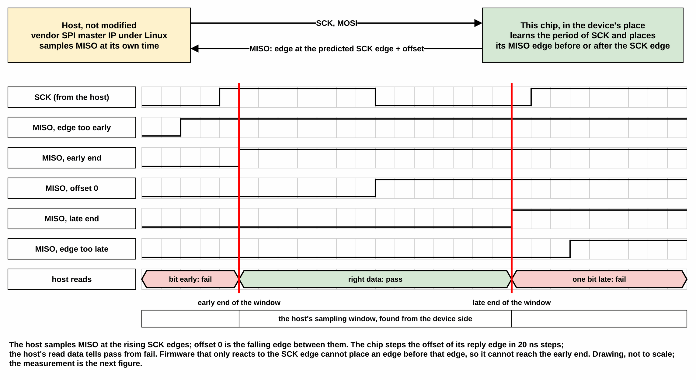
How far this claim is shown: on FPGA boards the window of an unmodified vendor SPI host (Xilinx AXI Quad SPI under Linux) was swept this way in steps of 4 clocks (80 ns), and the pass range matched a prediction committed before the run.
That run used an older RTL (256-word program memory) and a bench script chose each offset; it has not been repeated on the RTL in src/.
Section 8 has the measurement, the calibrated delay lines that go below one clock, and what is and is not new in them.
An entry for the Jane Street Protocol Emulator ASIC Competition, built for Tiny Tapeout on IHP sg13cmos5l (8x4 tiles, 50 MHz, top module tt_um_taehyun9999_protocol_emulator).
A one-page summary for judges, with every claim, its evidence and the commands to recheck it, is docs/submission.md.
- What it is.
Two barrel CPUs, each with two hardware threads (called harts), drive eight protocol pins.
One instruction drives a pin, shifts a bit, or waits for a level or for an exact time.
Each of the four harts runs one instruction every 40 ns whatever the others do. - Why it is flexible.
A protocol is a program in an SRAM, not a block of logic: 1024 words per core. 152 firmware files cover UART, SPI, I2C, JTAG, SWD, CAN, PS/2, USB and many more. 110 of them were added without changing one line of RTL.
The author chose those protocols after the RTL existed; a procedure with protocols drawn by lot is written but not run (section 9). - What was added last.
An SRAM self test, a debug unit (breakpoints, single steps, instructions injected by the host), a fractional tick generator per hart and a few instruction additions.
Each has a precedent (the RP2040 PIO has a fractional divider and instruction injection, memory BIST is standard), so they are bring-up and debugging aids, not claims of novelty (docs/novelty.md).
The submitted chip also has the shift unit of branchint7in core 0: it moves the bits of a hart's bytes at clock resolution, for SPI up to 25 MHz in simulation, UART or WS2812, and knows no protocol itself (docs/su.md).
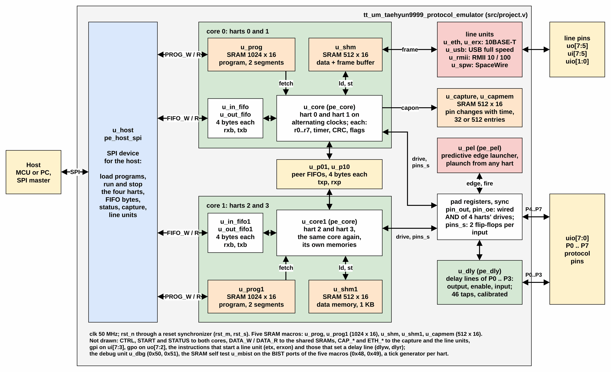
The block diagram of the chip; the boxes carry the instance names of src/project.v, and section 2 says what each block does.
What the chip did on an FPGA board against real devices, with the Vivado captures, is under Board demonstration below.
Where the RTL in src/ stands.
Most evidence belongs to the step before the last four blocks; docs/revisions.md says which RTL each result is from.
| Check | The RTL in src/ |
The step before it, or older |
|---|---|---|
| RTL simulation (cocotb) | On the src/ of this tree (333edc3a: int8_su, the shift unit of int7 on c74b3267, RTL revision 0x07) every run of this tree passes (one copy of 8135119, 2026-11-22): 151 runs, 864 tests, 846 pass, none fail, 18 skipped (6 need a netlist with SDF, 12 are the halves of the two test_mbist model runs), the shift unit's own 23 tests (test_su, test_su_chip, test_su_model) and the unit benches for the gaps of the third mutation campaign among them (evidence).Before those benches and the SHT1x and ZACwire modules, on one copy of e94d209 (whose Verilog is that of src/; they differ only in flow settings of src/config.json): 146 runs, 840 tests, 824 pass, none fail, 16 skipped (evidence).Before the shift unit, on c74b3267 (the area-reduced RTL with the declaration fix of a3aed55), every module passes (one copy of 3c7a8cf, whose test, firmware and host files are those of that tree): 143 runs (142 modules; test_mbist runs twice), 815 tests, 799 pass, none fail, 16 skipped (6 need a netlist with SDF; 10 are the halves of the two test_mbist model runs) (evidence).Before that fix, on the Verilog of 2ad37f2, every module of the tree of 1ace5f4 passes: 141 runs (140 modules; test_mbist runs twice), 804 tests, 789 pass, none fail, 15 skipped (evidence); the eight modules whose test, firmware or host files changed after it pass again on the tree of ab7b7a0: 43 tests, 41 pass, none fail, 2 skipped, and the three CAN control scripts catch 19 of 19 (evidence); test_usb_fs_unit, added after both, passes (1 of 1).Its changed modules' controls are caught (five MBIST controls and the waitp2_c_first mutant, 2026-11-18).Every module passes on F5t-d66, the RTL before the area reduction: 141 runs (140 modules; test_mbist runs twice, once per SRAM model), 804 tests, 789 pass, none fail, 15 skipped (5 need a netlist with SDF; 10 are the halves of the two test_mbist model runs, each test running in one of them) (evidence) |
130 modules, 715 tests, all pass, on the RTL with the delay lines (44 taps) |
| Formal | All fifteen scripts pass on this RTL (formal/README.mdprivate repo file). Proved without a depth bound: hart isolation in a core, power-on safety of the chip, the USB line unit and the shift unit, with 13, 36, 13 and 9 planted bugs caught; the launcher, the SRAM self test, the tick generator, the line units and the capture on their own. Bounded only: core isolation (43 clocks from reset) and the shared SRAM arbiter. Of the 169 planted bugs the fifteen scripts catch, 153 have a trace from reset; the other 16 fail in the induction step only, with no trace from reset up to the depth searched (formal/README.mdprivate repo file) |
Hart isolation, power-on safety and the launcher proved without a depth bound, with planted bugs caught |
| Layout (Tiny Tapeout flow, local) | The submitted chip (adopted 2026-11-20) is int8_su, the src/ of this tree (333edc3a): the shift unit of int7 on c74b3267, routed with PL_TIMING_DRIVEN.The author decided to submit the version that passes the official criteria. It passes the official Tiny Tapeout flow: GitHub Actions run 44564070634 on branch ci/int8-su-tdr (f9e3f8a): GDS built, precheck 10 of 10 (the KLayout SG13CMOS5L DRC among them), gate-level test 19 of 19 (evidence).Its local run has no setup or hold violation in the three corners (setup 2.020 ns slow, hold 0.037 ns fast) and passes the gate-level test 19 of 19 and the local precheck 10 of 10; its netlist (MD5 6110106c) is proved equivalent to the RTL (two modes; a netlist with two delay taps swapped is disproved) and passes the XSim timing check of hold with the 0.10 ns margin and the gate-level tests with the SDF of each corner (19 of 19, fine USB edges included) (evidence).tools/hard_gate.py, the project's own stricter gate, passes 6 of its 9 items; the three it fails are known exceptions.Items 3 and 8 report the same two pins over the max slew limit in the slow corner, A_BIST_DIN[7] of the capture SRAM (0.716 ns) and of core 1's program SRAM (0.597 ns) against 0.595 ns; the macro reads these pins only during the SRAM self test.Item 6 is Metal3 at 61.16 % and 60.13 % after two repair steps, above the 60 % the project set for itself on 2026-11-14 (overflow 1 in one step, 0 in the last). In each SDF run Icarus could not place one wire delay of 0.004 ns, from a buffer to the output uo_out[1] across an assign; the buffer's own delay is placed.The chip submitted before it, from 2026-11-19 to 2026-11-20, is c74b3267: it passes the official Tiny Tapeout flow, GitHub Actions run 44417614871 on branch ci/area-decl (d2b7a18, tt-gds-action@ttihp27a): GDS built, precheck 10 of 10 (the KLayout SG13CMOS5L DRC among them), gate-level test 19 of 19 (evidence); its own local run passes tools/hard_gate.py 9 of 9, the gate-level test 19 of 19 and the local precheck 10 of 10 (evidence).Below the shift unit, the chip is F5t-d66 with the area reduction, 2ad37f2: the RTL of a4861cf (284 fewer flip-flops than F5t-d66, 3,480; buffered SRAM control and address inputs), routed with diodes for the antenna repair.c74b3267 (since a3aed55) is the src/ of 2ad37f2 with two declaration lines of src/project.v moved ahead of the instance that uses their nets, which Icarus 13, the version of the official gate-level test, requires (tools/rtl_compile_check.sh passes on it and fails on the src/ of 2ad37f2); the circuit is the same (yosys equivalence of the two, 17,491 of 17,491 $equiv proved; the synthesized netlists are byte-equal, MD5 e737d7f8).Its layout, hardened 2026-11-19, has the final netlist of 2ad37f2 byte for byte (MD5 a816f7af) and the same SDF of the three corners but for the header line with the time the file was written (tools/cmp_final.sh, revisions.md), so the netlist results below hold for it; the results below were measured on 2ad37f2, the RTL just before that change.Its local LibreLane 3.1.0.dev4 run of 2026-11-18 passes all nine items of tools/hard_gate.py: no setup or hold violation (setup 2.018 ns slow, hold 0.047 ns fast), no max slew or capacitance violation at any SRAM pin, LVS without a difference, no antenna violation (five diodes), no routing DRC, global routing without overflow (Metal3 51.26 %); standard cells 456,835 um2, 9.0 % less than F5t-d66 (502,079), utilization 62.3 %; gate-level test 19 of 19.Its netlist (MD5 a816f7af) is proved equivalent to the RTL (two modes; a netlist with two delay taps swapped is rejected), passes the gate-level tests with the SDF of each of the three corners (19 of 19, fine USB edges included) and the XSim timing check of hold with the 0.10 ns margin of signoff (no violation) (local, 2026-11-18 and 19).2ad37f2, superseded by the declaration fix with the same netlist, passes the official Tiny Tapeout flow too: GitHub Actions run 44310801964 on branch ci/area-2ad37f2 (541256c, tt-gds-action@ttihp27a) built the GDS, passed the precheck 10 of 10 (the KLayout SG13CMOS5L DRC among them; artifact precheck_reports, evidence) and the gate-level test 19 of 19; 541256c is an earlier commit of this tree with the src/ of 2ad37f2 (7ba97c50), and the commits after it change tests and documents only up to the declaration fix a3aed55 (revisions.md).The SDF runs of F5t-d66 and of 2ad37f2 gave some SRAM macros their read data 1.0 ns after the clock, the simulation model's default, instead of the SDF delay (fast 2.3, typ 3.8, slow 6.3 ns): the self test put the SRAM clock on the macros' BIST clock pin, a path the SDF does not time, so these runs were optimistic on those read paths; the converter times that path since 25e0297, and with it 2ad37f2 passes again: test/test.py 19 of 19 and the fine USB edges in each corner, and test/test_sdf.py 5 of 5, its SRAM read delays within 10 ps of the SDF (revisions.md).The chip before it, F5t-d66 ( 834e279, the full configuration with the SRAM self test), passes the official Tiny Tapeout flow: GitHub Actions run 44219377734 on branch ci/f5t-d66 (834e279 plus the CI settings, tt-gds-action@ttihp27a) built the GDS, passed the precheck 10 of 10 (the KLayout SG13CMOS5L DRC among them) and the gate-level test 19 of 19.The local LibreLane 3.1.0.dev4 run of the same commit: no setup or hold violation in signoff (setup 1.330 ns slow, hold 0.046 ns fast), LVS without a difference, no antenna violation, no routing DRC, global routing without overflow (Metal3 59.5 %); the project's own stricter tools/hard_gate.py fails it on items 3 and 8 only, a max slew at six SRAM input pins in the slow and typical corners (worst 0.149 ns over the limit).Its netlist is proved equivalent to the RTL (two modes; a netlist with two delay taps swapped is rejected), passes the gate-level tests with the SDF of each of the three corners (19 of 19, fine USB edges included) and the XSim timing check of hold with the 0.10 ns margin of signoff (no violation; the hold-failing F5k fails it) (revisions.md). LITE reference build L4d (without the SRAM self test, not a submission candidate, a check of the method): no setup, hold, slew or capacitance violation in the three corners (setup 0.867 ns slow, hold 0.074 ns fast), utilization 65.9 %, gate-level 19 of 19, Tiny Tapeout precheck 10 of 10 (local, dev4 PDK 89d42ee6, yowasp-yosys 0.63, KLayout 0.30.8: no SG13CMOS5L DRC item); tools/hard_gate.py fails it on 6 GRT-0273 warnings and a global routing overflow of 23 |
Run H5 (46 taps, fine USB edges): precheck passed, setup 0.287 ns, hold 0.080 ns, netlist proved equivalent to its RTL; it needs a user SDC that Tiny Tapeout has not accepted yet |
| FPGA boards | The bit of 1ea8457 (cc9fbbae; its Verilog differs from c74b3267 only by SRAM input buffers that are wires on the FPGA and the two declaration lines of a3aed55, and from src/ also by the shift unit): bring-up 15 PASS, 0 FAIL, 1 SKIP, the SRAM self test 10 of 10, and USB, CAN, 10BASE-T transmit and SWD (the chip reading an STM32G474) against real devices (Board demonstration, section 12) The RTL of src/, with the shift unit, has run on the board in the SPI roles only (bit f6e7c3de): the shift unit as SPI master at 12.5 MHz, mode 3, against an STM32G474, MOSI 30 of 30 transfers of 32 bytes and MISO 10 of 10 at sample delays 1 and 2, then for 24 hours and with the chip's CS as the G474's hardware NSS (20 of 20 with CS, ff 10 of 10 without), and as SPI device at 9 MHz (260 of 260 with the G474's pins at medium speed, bit 0eeefc8d) (SPI); its other modes and the runs above have not been run with those bits. |
F5t-d66's RTL (bit ad022a41): USB, CAN, 10BASE-T transmit and SWD against real devices (2026-11-18 and 19).One-core RTL: self test, 279 passes, 0 fails; older RTL: 8 hours, 1,252,406 passes, 0 fails, and the launcher sweep |
| Silicon, real external devices | No silicon. On the FPGA board the bit above met a PC's USB host, the KD240's CAN controller, a PC network card and an STM32G474 |
No silicon. On the FPGA board bit ad022a41 met the same three, and for SWD an ST-Link probe and an STM32G474; before 2026-11-18 the other side was always a model, vendor IP or the second FPGA board |
| Process, area, clock | IHP sg13cmos5l, Tiny Tapeout 8x4 tiles, 50 MHz |
| Execution | 4 harts in 2 cores, one instruction per hart every 40 ns (one tick = 2 clocks) |
| Memories (5 SRAM macros) | per core: program 1024 x 16 bit and a shared SRAM of 1 KB (128 bytes of it the data memory); one capture memory of 512 entries; core 0's shared SRAM also holds the 128-byte frame buffer |
| Firmware | 152 files: 138 hand-written, 14 generated from tables; the largest two use 512 words |
| Fastest in firmware | UART 3.125 Mbaud full duplex, SPI master 3.125 MHz, I2C target 1 MHz (with clock stretching) |
| With a hardware line unit | 10BASE-T (10 Mbit/s), USB full speed (12 Mbit/s), RMII (10 and 100 Mbit/s), SpaceWire; all in simulation only |
| Finer than a clock | calibrated delay lines on P0 to P3, 46 taps of 0.5 to 1.2 ns; a delay model in RTL simulation, and the layout delays of runs H4d and H5 in gate-level simulation |
Board demonstration: the submitted RTL against real devices
The RTL of the submitted chip without its shift unit runs on a ZCU104 FPGA board at 50 MHz (bit cc9fbbae, built from 1ea8457; its Verilog differs from c74b3267 only by SRAM input buffers that are wires on the FPGA and the two declaration lines of a3aed55, and from src/ also by the shift unit, which these runs do not use).
The shift unit's own run, SPI master against an STM32G474, uses the RTL of src/ with the shift unit (bit f6e7c3de, built from 63329d9: src/ 333edc3a and an SPI pad mode of the FPGA wrapper; the chip reads back RTL_REV 0x07).
The protocol pins come out on the PMOD connector J55 and go to the other device through a breadboard; the whole wiring is drawn below, and each subsection starts with the setup of its own protocol.
Each row below has two screens, both taken during the run it shows (2026-11-19; the shift unit on 2026-11-20):
- ILA.
The Vivado 2023.1 Hardware Manager screen of the ILA inside the FPGA, at the chip's pads:pad_in[7:0],pad_oe,uio_out, 16,384 samples at 50 MHz (327 us).
The top image is the whole capture; the red boxes mark the parts shown enlarged below it, each enlargement a Vivado screen of its own.
The boxes and their labels are the only marks added. - The other side.
The other device's own tool, showing what that device received from the chip.
| Protocol | The chip | The other side | Result |
|---|---|---|---|
| SWD | debugger, swd_host_gen.pe |
STM32G474RE on a NUCLEO-G474RE | read DPIDR 0x2BA01477, CPUID 0x410FC241 and DBGMCU_IDCODE 0x20036469 through the MEM-AP; DPIDR 20 of 20; with P0/P1 taken off the pins by the board's loop mode, no reply 0 of 3 (with the SWDIO wire pulled, 0 of 5 on bit ad022a41) |
| USB low speed | device, usb_dev.pe |
a PC's xHCI host (Linux) behind a hub | enumerated and configured 10 of 10, no kernel error |
| CAN 2.0, 500 kbit/s | node, can_gen.pe |
the KD240's CAN controller through an SN65HVD230 transceiver (it runs 496,031 bit/s, sample point 0.714) | chip to KD240 4 of 4 acknowledged, KD240 to chip 3 of 3; TEC, REC and overruns 0 |
| 10BASE-T transmit | line unit u_eth, net.pe |
a PC network card | 20 of 20 UDP frames received |
| SPI by the shift unit, 12.5 MHz | SPI master, mode 3, SPI_FW of test_su_chip.py |
SPI1 of an STM32G474RE on a NUCLEO-G474RE, as slave | 32 bytes right on the G474 30 of 30; MISO right 10 of 10 at SMP 1 and 2, one bit late at SMP 3 |
| SPI by the shift unit, 24 hours | the same, unattended for 24 hours (2026-11-20 to 21; no ILA, so no screens) | the same | MISO right 1,589,690 of 1,589,702 at 12.5 MHz, SMP 1; 12 wrong, all within 190 s, cause not found; MOSI right in 1,508,596 of 1,508,599 lines recorded, none recorded for 4,410 s; at 25 MHz only SMP 3 is right |
| SPI by the shift unit, hardware NSS | the same with the chip's CS (P3, J55-2) on PA4 as the G474's hardware NSS (2026-11-21; the ILA captured one transfer with CS and one without) | the same, firmware main_nss.c |
CS low: MISO right 20 of 20 at 50 ms and 104 of 104 at 50 to 500 ms between transfers, one G474 line per transfer; CS held high (control): MISO ff 10 of 10, nothing received; ILA: 256 of 256 SCK rises inside the CS low of 1,050 samples |
| SPI device, the shift unit as slave | external clock mode, mode 3, early, su_spi_slave.pe; PADS bit 18 brings SCK and CS in (bit 0eeefc8d, 2026-11-22) |
SPI1 of the same G474 as master, g474_spi_master |
9 MHz: both directions right 260 of 260 with the G474's pins at medium speed, MOSI 59 and MISO 57 of 60 at very high speed; 18 MHz and 9 MHz without early: 0 of 20 and 0 of 10 |
[figure: Breadboard wiring: ZCU104 J55, the 30-column breadboard with the Ethernet transmit, USB and planned Ethernet receive blocks, the RJ45 adapter, the USB-A cable, the CAN module, the KD240 and the NUCLEO-G474RE]private repo file
The whole wiring: the J55 pins on the left, the breadboard in the middle (Ethernet transmit in columns 3 to 12, USB in columns 15 to 20, the Ethernet receive circuit in columns 21 to 30, planned and not built), the CAN module wired straight to J55, and the other devices on the right.
Wire colours tell the signals apart; the part values and their colour codes are in the box on the left (PNG).

SWD: the chip reads an STM32G474
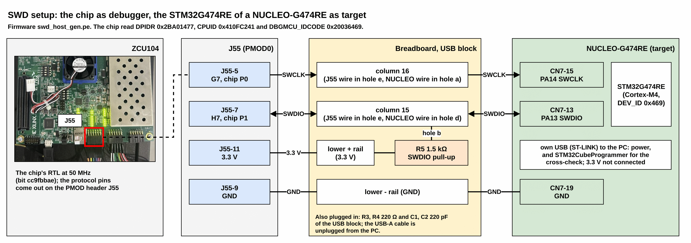
The setup: J55-5 (SWCLK) and J55-7 (SWDIO) go through breadboard columns 16 and 15 to CN7-15 (PA14) and CN7-13 (PA13) of the NUCLEO-G474RE, with R5 1.5 kΩ as the SWDIO pull-up and GND shared.


Above, the ILA: an SWD read of DPIDR by the chip, enlarged at the packet, the request header with its turnaround and ACK, and the data with its parity.
Below, STM32CubeProgrammer, through the NUCLEO's own ST-LINK, reads 0x20036469 at 0xE0042000, the DBGMCU_IDCODE the chip read.
USB: a PC enumerates the chip
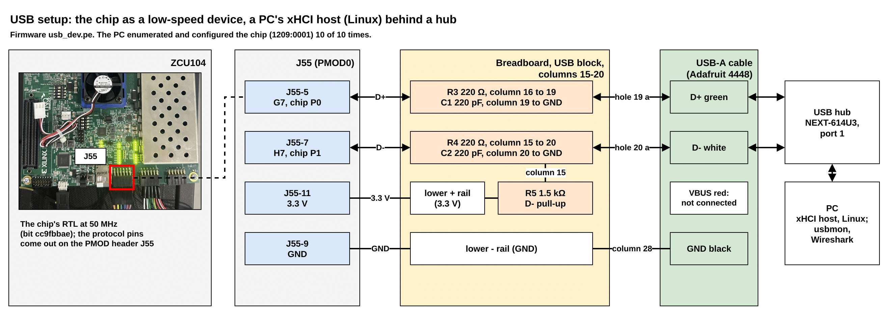
The setup: J55-5 (D+) and J55-7 (D-) go through R3, R4 220 Ω with C1, C2 220 pF to GND, D- has the 1.5 kΩ low-speed pull-up, and a USB-A cable without VBUS goes to a hub on the PC.
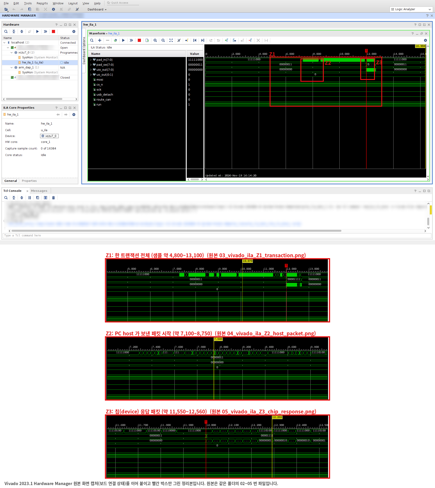
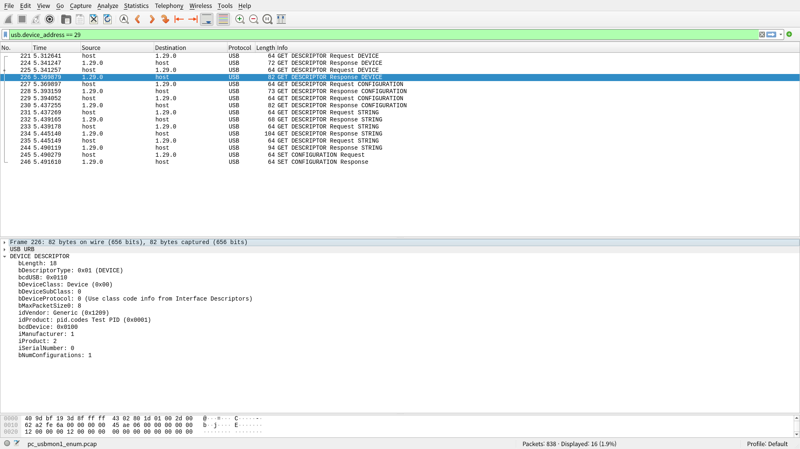
Above, the ILA: one transaction, the PC's packet and the chip's reply (pad_oe shows when the chip drives D+ and D-).
Below, Wireshark on the PC's usbmon: the DEVICE descriptor the chip sent, 1209:0001, USB 1.10.
CAN: the chip and the KD240 at 500 kbit/s
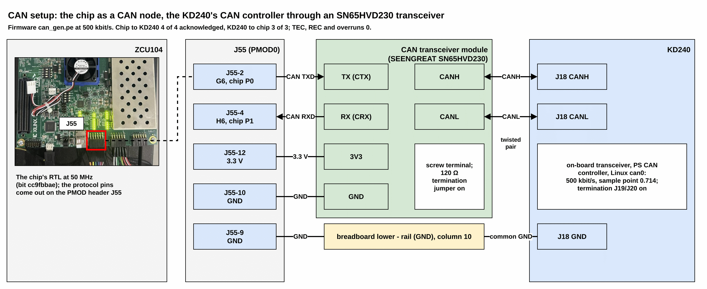
The setup: J55-2 (TXD) and J55-4 (RXD) go to an SN65HVD230 transceiver module, whose CANH and CANL go as a twisted pair to J18 of the KD240, with 120 Ω at both ends and a common GND.

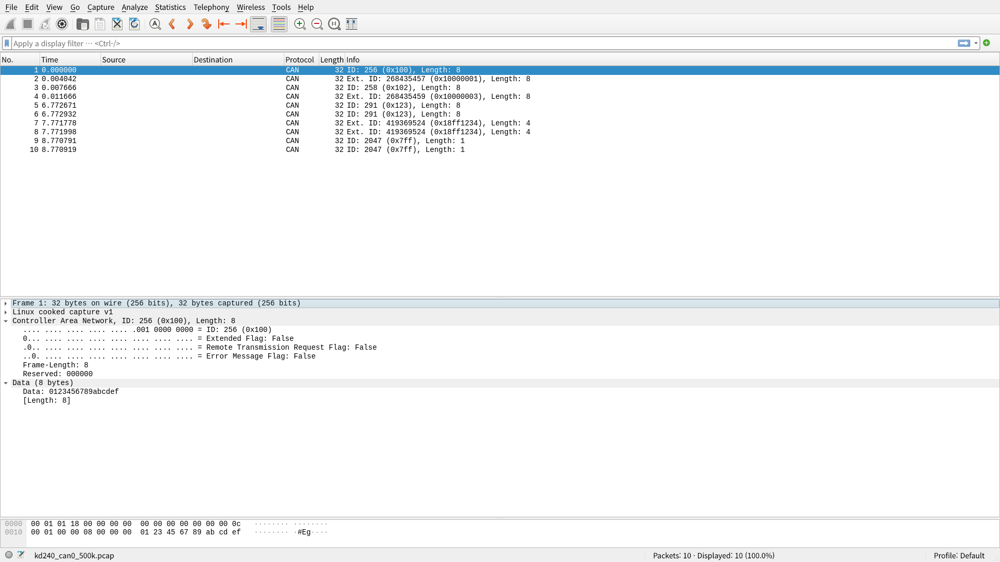
Above, the ILA: a frame the chip sent, enlarged at SOF, identifier and control field, the data field, and CRC, the ACK slot the KD240 drives, and EOF.
Below, Wireshark on the KD240's can0: the chip's frames 0x100, 0x10000001, 0x102, 0x10000003 and the KD240's own 0x123, 0x18FF1234, 0x7FF (these appear twice, the capture also records the KD240's own transmissions).
10BASE-T: a PC network card receives the chip
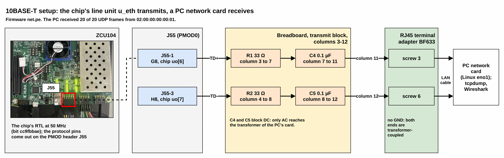
The setup: J55-1 (TD+) and J55-3 (TD-) go through R1, R2 33 Ω and C4, C5 0.1 µF to screws 3 and 6 of an RJ45 terminal adapter, and a LAN cable goes to the PC's network card.


Above, the ILA: one frame of about 61 us, enlarged at the start of the preamble (Manchester at 10 Mbit/s) and at the end of the frame.
Below, Wireshark on the PC: 20 frames from 02:00:00:00:00:01, UDP port 9999, payload PE chip 10BASE-T #0000 and on.
SPI: the shift unit against an STM32G474 at 12.5 MHz
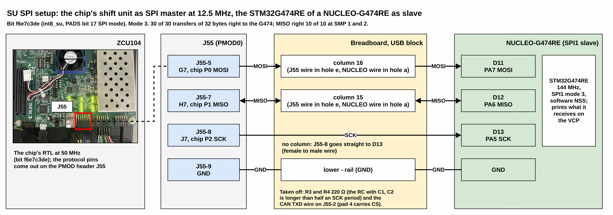
The setup: J55-5 (P0, MOSI) and J55-7 (P1, MISO) go through breadboard columns 16 and 15 to D11 (PA7) and D12 (PA6) of the NUCLEO-G474RE, J55-8 (P2, SCK) goes straight to D13 (PA5), and GND is shared.
R3 and R4 (220 Ω) of the USB block are taken off, since with C1 and C2 they make an RC longer than half an SCK period, and so is the CAN wire on J55-2, since pad 4 carries CS in the SPI pad mode.
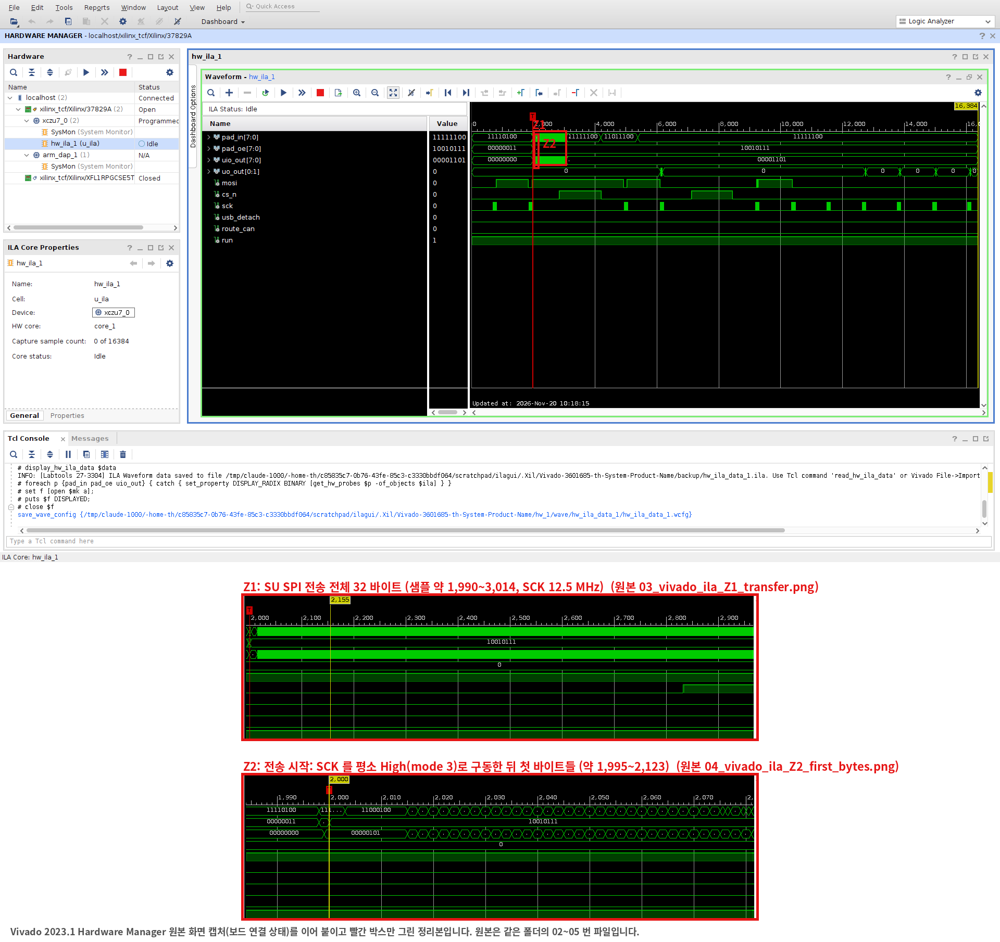
The ILA: one transfer of 32 bytes with the chip driving SCK, enlarged at the whole transfer and at its first bytes; SCK is high between bytes and has 256 rising and 256 falling edges, no other edge.
The other side is the G474's own output on its VCP: SPI 32 bytes: and the bytes of SU SPI 12.5 MHz from the PE chip, 30 times of 30 (logprivate repo file).
The other way, the chip stored the G474's MISO bytes 00 to 1f right 10 of 10 times with the sample delay SMP 1 and 10 of 10 with SMP 2; with SMP 3 it read each byte one bit late, 10 times of 10, a sample point past the end of the window.
The first runs, in mode 0, failed by one or two bits on the G474 side while the ILA showed exactly 256 SCK edges: the FPGA pull-up of J55 pad 7 holds SCK high while the chip releases the pin during a load, and a mode 0 slave counts that rise as a bit; mode 3 on both sides removed it (fpga/zcu104_demo/g474_spi_slaveprivate repo file, evidence).
The same setup then ran unattended for 24 hours (2026-11-20 14:01 to 11-21 14:01, evidence, countsprivate repo file).
First a map of SCK by sample delay, 20 transfers each, MISO only: at 6.25 MHz SMP 0 was right 19 of 20 times (the first transfer of the map was seven bits late) and SMP 1 20 of 20; at 12.5 MHz SMP 1 and SMP 2 were right 20 of 20; at 25 MHz only SMP 3 was right, 20 of 20.
Every other cell was 0 of 20, each byte read one bit early or late (two bits early at 25 MHz SMP 0): the window of right samples moves with SCK, and at 25 MHz it holds one sample delay only, with no margin on either side.
Then 12.5 MHz at SMP 1 for 24 hours: the chip read the G474's MISO bytes right in 1,589,690 of 1,589,702 transfers, with no timeout.
The 12 wrong transfers all lie between about 16:23:44 and 16:26:54 on 11-20 (190 s), each the bytes 00 to 1f shifted late by 1 to 8 bits; outside those 190 s none was wrong.
In that time, at 16:24:22, the PC's USB hub that carries the NUCLEO's ST-LINK disconnected and came back, about 38 s after the first wrong transfer; a second such event at 17:07:17 brought no wrong transfer.
The cause is not found: the errors begin before the hub event, and a touch of the breadboard or the cables at that time is suspected but was not checked.
On the MOSI side the G474 printed 1,508,599 lines that the PC recorded, and 1,508,596 of them are the 32 bytes sent.
Of the other three, two are in the first second of the record (one bit shifted, and one cut after 29 bytes), where the logger read 84 buffered lines at once that may include transfers of the map, and the third is right but for one garbled character in front of it, the first line after the logger reopened the device.
From 15:27:09 to 16:40:39 (4,410 s) the first logger read nothing, so no MOSI line exists for the 190 s of the MISO errors; its replacement reopens the device after a re-enumeration.
On 2026-11-21 the chip's CS went to the G474 as well: J55-2 (P3, pad 4) to A2 (PA4), with the G474 firmware changed in three places only, PA4 as SPI1_NSS (AF5), SSM = 0 in SPI1_CR1 (hardware NSS) and the banner (main_nss.cprivate repo file, evidence, countsprivate repo file).
The control image is SPI_FW with low 3 changed to high 3, so CS stays high through the same transfer.
With 50 ms between transfers the chip read MISO 00 to 1f in 20 of 20 transfers with CS and ff (the pull-up; the G474 did not drive MISO) in 10 of 10 without, and the G474 printed one line per transfer with CS, 20, and none for the control; 104 more transfers with CS at 50 to 500 ms between them were right 104 of 104.
All 130 lines the G474 printed are the 32 bytes sent.
A first run with the board's older copy of su_spi_run.py, without the 50 ms wait, read 6 of 20 right: the known back-to-back effect of the G474 firmware above, not of NSS.
Two Vivado ILA captures followed (23:50 and 23:58, decodeprivate repo file): with CS, CS was low for 1,050 samples (21.0 us at 50 MHz) and all 256 SCK rising edges lay inside it, none outside; without CS, CS stayed high over all 16,384 samples while SCK rose 256 times. At the SCK rises the pads read MOSI SU SPI 12.5 MHz from the PE chip in both, and MISO 00 to 1f with CS, all ones without; the G474 printed one line for the capture with CS and none for the other. CS raised in the middle of a transfer was not tried.
The flash read before this load confirms that the 24-hour run used the mode 3 firmware: its first 1,001 bytes equal g474_spi_slave.bin (MD5 9d844cd8).
On 2026-11-22 the roles turned: the shift unit as SPI device in external clock mode (mode 3, early) and SPI1 of the G474 as master, on the same wires, with PADS bit 18 of the FPGA wrapper giving the chip the master's SCK (pad 7) and CS (pad 4) as inputs (bit 0eeefc8d, built from e28ae09; su_spi_slaveprivate repo file, evidence, countsprivate repo file).
At 9 MHz (144 MHz / 16) the chip stored the G474's 32 bytes and the G474 read the chip's 32 bytes right in 260 of 260 transfers once the G474's pins were set to medium speed; at very high speed 59 and 57 of 60.
At 18 MHz, and at 9 MHz without early, no transfer was right (0 of 20, 0 of 10). In simulation the chip shows the next bit 62 to 80 ns after the master's sampling edge, so 18 MHz (a 55.6 ns period) reads MISO one bit late, as predicted; that MOSI failed as well is not in the clean simulation, and a model of crosstalk from MISO onto SCK reproduces it: the settings that fail are those where MISO changes while SCK is high.
A Vivado ILA capture of one right transfer at very high speed shows both strings at the pads and one 20 ns high pulse on CS at a falling SCK edge, which the NSS captures, with the chip driving SCK, do not have.
Click an image for the full size.
Not shown here: SWD with the chip as the target (an ST-Link V2-1 probe with OpenOCD read the chip's DPIDR 10 of 10 times at 480 kHz, on F5t-d66's bit ad022a41; no ILA capture of it yet), and 10BASE-T receive (its parts have not arrived).
The logs, captures and ILA samples behind the table: evidence.
The earlier runs and their numbers are under Real external devices and in docs/brief.md.
The setup, in quick photos (better ones will follow): the ST-Link V2-1 probe, the breadboard between the J55 cables and the other devices (seen from above and from the side), and the ZCU104 with the PMOD cables.
 |
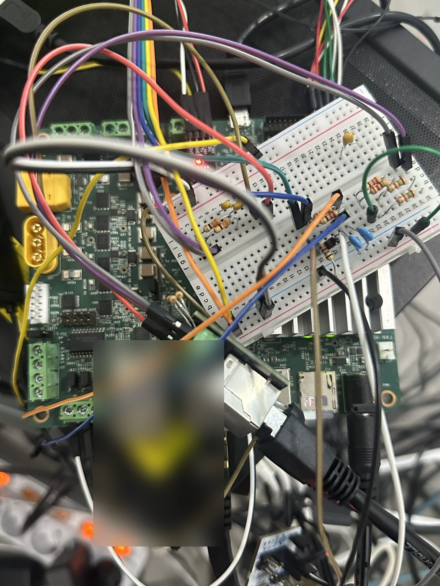 |
 |
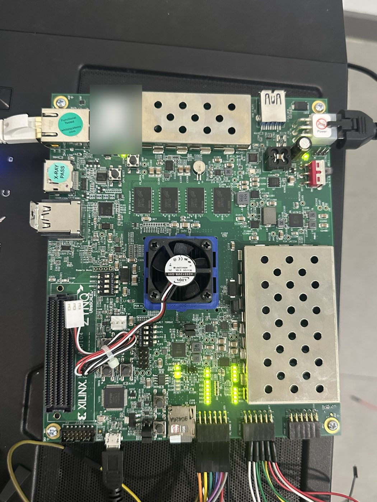 |
For a judge: fifteen minutes
| Min | Question | Read | Run |
|---|---|---|---|
| 5 | What is in the chip and why is its timing exact? | The chip at a glance, How it runs, Why the timing is exact | python3 tools/peasm.py firmware/uart.pe -o $TMPDIR/uart.hex prints 23 words, hart1=12 |
| 5 | What stands behind the claims? | docs/submission.md, the table of section 10, evidence/README.md | python3 tools/evidence_check.py check recounts the regressions; python3 tools/ledger_check.py check compares the numbers of this page with their raw files; cd test && make -B runs test.py (19 tests) |
| 5 | What is not shown? | Limits, docs/faq.md, docs/verification.md, section 11 |
The five claims of this page: protocols are programs (section 6); edges are exact to the clock (section 5); harts are isolated from each other and can share pins (section 7); the chip can measure the other side (section 8); new protocols need no new hardware (section 9).
Contents: 1 Problem · 2 The chip at a glance · 3 Pins · 4 How it runs · 5 Instruction set · 6 From source to waveform · 7 Harts together · 8 Measuring the other side · 9 Protocols · 10 Verification · 11 Physical implementation · 12 Limits · 13 Repository and how to run it
Words used on this page:
| Word | Meaning here |
|---|---|
| host | the computer or microcontroller that controls the chip over SPI: it loads the programs and exchanges data bytes |
| firmware | a program for the chip, written in the assembly language of this chip (firmware/*.pe) |
| hart | hardware thread: one of the four processors, each with its own registers, timer and program counter |
| core | a barrel CPU with two harts, its own program memory, data memory and host FIFOs (core 0: harts 0 and 1, core 1: harts 2 and 3) |
| tick | the time one hart needs for one instruction: 2 clocks = 40 ns at 50 MHz |
| protocol pins | the eight bidirectional pins P0 to P7 (uio[7:0]) on which every firmware protocol runs |
| line unit | a small hardware block for a protocol that is too fast for firmware |
1. The problem and the approach
A protocol emulator stands in for one side of a digital link: it plays the EEPROM, the debug probe, the sensor or the bus master, with edges at the times the real part would make them.
The competition asks for a chip that can do this for protocols that were not known when it was made.
A chip of fixed blocks supports what its blocks support and nothing after fabrication.
A general CPU with GPIO supports anything in principle, but its edges come when the software gets to them.
This design takes a third way:
- Protocols are programs.
The program memory is an SRAM that the host fills over SPI.
A new protocol is a new file, not a new chip. - Instructions are pin operations.
low,high,rel,shout,shinandwaitpact on one pin in one tick, so a protocol reads almost like its timing diagram. - Time is exact by construction.
Each hart owns every second clock.
A period timer (tset,twait) places edges at exact multiples of a period however long the code in between took. - Several harts.
One protocol often needs two things at once (send and receive, clock and data, bus and watchdog), or the chip must be two devices at once.
Two harts on shared pins give that without interrupts, and the second core gives a second pair with its own program. - Hardware only where firmware cannot reach.
A tick is 40 ns.
Small blocks help below that: an edge launcher that predicts the other side's clock, line units for four fast protocols, and delay lines for steps of about a nanosecond.
Differences from the RP2040 PIO, TI's PRU and other programmable I/O engines: docs/novelty.md.
2. The chip at a glance
The boxes carry the instance names of src/project.v.
| Block | File | What it does |
|---|---|---|
u_host |
src/pe_host_spi.v |
SPI device for the host: loads and reads the program memories, starts and stops the four harts, moves FIFO bytes, reads status, sets up the capture and the line units |
u_core, u_core1 |
src/pe_core.v, src/pe_hart_regs.v, src/pe_rf.v |
The two barrel CPUs, the same module twice: harts 0 and 1, harts 2 and 3. Each hart has eight byte registers r0 to r7, Z and C flags, a one-level call, a 16-bit timer and a 16-bit CRC unit |
u_prog, u_prog1 |
src/pe_progmem1k.v |
Program memory of each core: one IHP SRAM macro, 1024 words of 16 bits, in two segments of 512. One word is one instruction |
u_shm, u_shm1 |
src/pe_shm.v |
Shared SRAM of each core: one macro of 512 x 16 bits, 1 KB. It holds the 128-byte data memory, and in u_shm the 128-byte frame buffer of the line units.The block also decides who gets the single port of the macro at each clock edge |
u_in_fifo, u_out_fifo, and the same with 1 |
src/pe_fifo.v |
Four bytes each way between the host and each core (rxb, txb) |
u_p01, u_p10 |
src/pe_fifo.v |
Peer FIFOs, four bytes each way between the two cores (txp, rxp) |
| pad registers | in src/pe_core.v |
Each hart has its own output and enable register for P0 to P7. A pin is the wired AND of all four; the pad flip-flops that form it are those of u_core |
| synchronizers | in src/project.v |
Two flip-flops on every input pin (pins_s, gpi_s), and two on the release of rst_n (rst_m, rst_s) |
u_dly |
src/pe_dly.v |
Delay lines of P0 to P3: one each for the output bit, the enable and the input of a pin, 46 taps, with a calibration chain. Bypassed after reset (section 8) |
u_pel |
src/pe_pel.v |
Predictive edge launcher: learns the period of a clock on a pin and changes a pin at the predicted edge plus an offset. One launcher, armed by any hart |
u_capture, u_capmem |
src/pe_capture.v, src/pe_progmem.v |
A logic analyzer on the protocol pins that stores only changes with a time delta, in its own SRAM macro: 32 entries by default, or 512 with a trigger and pre-trigger (docs/capture.md) |
u_mbist |
src/pe_mbist.v |
SRAM self test: March C- or March SS on one of the five macros through its BIST port, started and read by the host (0x48, 0x49, docs/mbist.md) |
u_dbg |
src/pe_dbg.v |
Debug unit: a breakpoint per hart, single steps and instructions injected by the host (0x50, 0x51, docs/debug.md) |
u_tg0, u_tg1 in each core |
src/pe_tickgen.v |
Fractional tick generator per hart: ticks at fclk / (N + k/M) for twait.f (docs/tickgen.md) |
u_eth, u_erx, u_usb, u_rmii, u_spw |
src/pe_eth_tx.v, src/pe_eth_rx.v, src/pe_usb_fs.v, src/pe_rmii.v, src/pe_spw.v |
Line units: 10BASE-T, USB full speed, RMII to an external PHY, SpaceWire. One is selected at a time ( ETH_CFG).The first four send and receive through the frame buffer; SpaceWire has seven registers in the load/store address space |
Each core has its own program, shared SRAM and host FIFOs, so a firmware runs unchanged on either.
The capture, the line units and the frame buffer belong to core 0; on core 1 the instructions for them do nothing.
The launcher, the delay line registers, the general outputs and the pins are shared by all four harts.
The five memories

All larger storage is in five SRAM macros of the IHP PDK, each with one port and a synchronous read:
- Program memory.
A hart only fetches.
The host writes and reads a program while both harts of that core are stopped; a word written while one runs is dropped and a sticky flag in the status says so. - Shared SRAM.
ldandstreach the data memory and, on core 0, the frame buffer;ldxandstxreach all 1024 bytes.
A store by one hart is seen by a load of the other hart of the core in the next tick. - One port, several users.
Only the hart that owns a clock can ask for the shared SRAM in it.
The host and a line unit can need the same edge; then the hart waits one tick and a sticky steal flag records it.
The host's reads are made ahead at free edges and the line units work through a small cache and queue, so this is rare (docs/architecture.md, Shared SRAM). - Capture memory.
Only the capture writes it and only the host reads it.
3. Pins
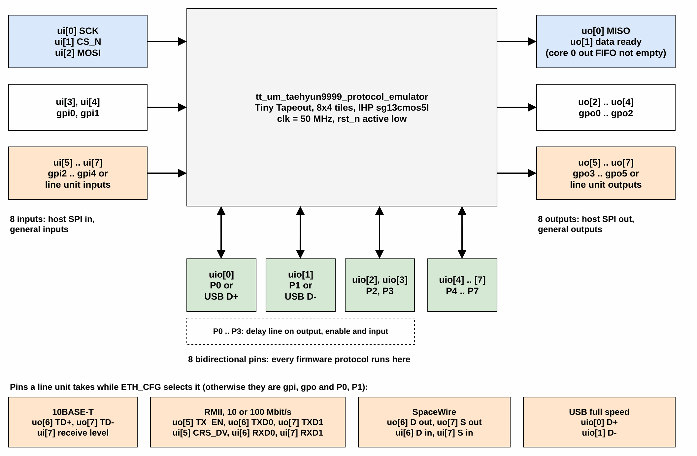
| Pin | Use |
|---|---|
ui[0], ui[1], ui[2] |
Host SPI: SCK, CS_N, MOSI (mode 0, SCK at most clk/8 = 6.25 MHz) |
ui[3] to ui[7] |
General inputs gpi0 to gpi4, read by firmware with gpi |
uo[0] |
Host SPI: MISO |
uo[1] |
High while the firmware of core 0 has a byte for the host. Core 1's count is in its status |
uo[2] to uo[7] |
General outputs gpo0 to gpo5, written by firmware with gpo |
uio[0] to uio[7] |
Protocol pins P0 to P7. Each can be an input, push-pull or open drain, per instruction. P0 to P3 pass a delay line on the way out and on the way in: the outputs behind the USB pin selection, the inputs in front of the synchronizers |
A line unit takes some pins while ETH_CFG selects it: 10BASE-T uo[6], uo[7] (TD+, TD-) and ui[7] (receive level from an external LVDS receiver); USB full speed uio[0], uio[1] (D+, D-); RMII uo[5] to uo[7] and ui[5] to ui[7]; SpaceWire uo[6], uo[7], ui[6], ui[7] (docs/architecture.md, Pins).
The host never drives the protocol pins, and firmware never touches the host SPI pins.
Which protocol signal sits on which of P0 to P7 is a constant in each firmware file (for example .equ TX, 0).
4. How it runs: four harts on alternating clocks

A barrel processor gives each thread a fixed turn.
Here the turn is one clock.
slot in src/pe_core.v toggles every clock: the first hart of a core executes in the clocks where it is 0 and the second in the others.
Both cores step on the same clocks.
So:
- each hart runs one instruction every 2 clocks (one tick, 40 ns);
- an instruction that waits (
twait,waitp,rxbon an empty FIFO) repeats in that hart's own clocks only, so a waiting hart never delays another.
The life of one instruction
Three clocks, of which the hart owns the first and the third:
- Address.
While a hart executes an instruction, the program SRAM of its core is given that hart's next PC. - Word.
The SRAM is synchronous: the word comes out during the next clock, which belongs to the other hart of the core, and is registered at the end of it. - Execute.
In the hart's next own clock the word is decoded and executed.
Registers, flags, the timer and the hart's pin registers are written at the clock edge that ends this clock.
So the one-clock delay of the SRAM is hidden in the other hart's turn, and nothing in these steps depends on what the instruction is or on what any other hart does.
A load from the shared SRAM takes the same route for its data.
That hart 1 cannot change what hart 0 does (its state, its fetches, its pin registers) is proved for every program and every input on the RTL in src/ (docs/verification.md, claim C1, formal/logs/iso_20261120_044547private repo file).
What the harts share on purpose is outside the claim: the pin levels, the data memory, the FIFOs, the event flags 4 to 7 and an instruction the host injects through the debug unit.
Between the two cores the same kind of claim is checked to a bounded depth only.
One instruction, one edge
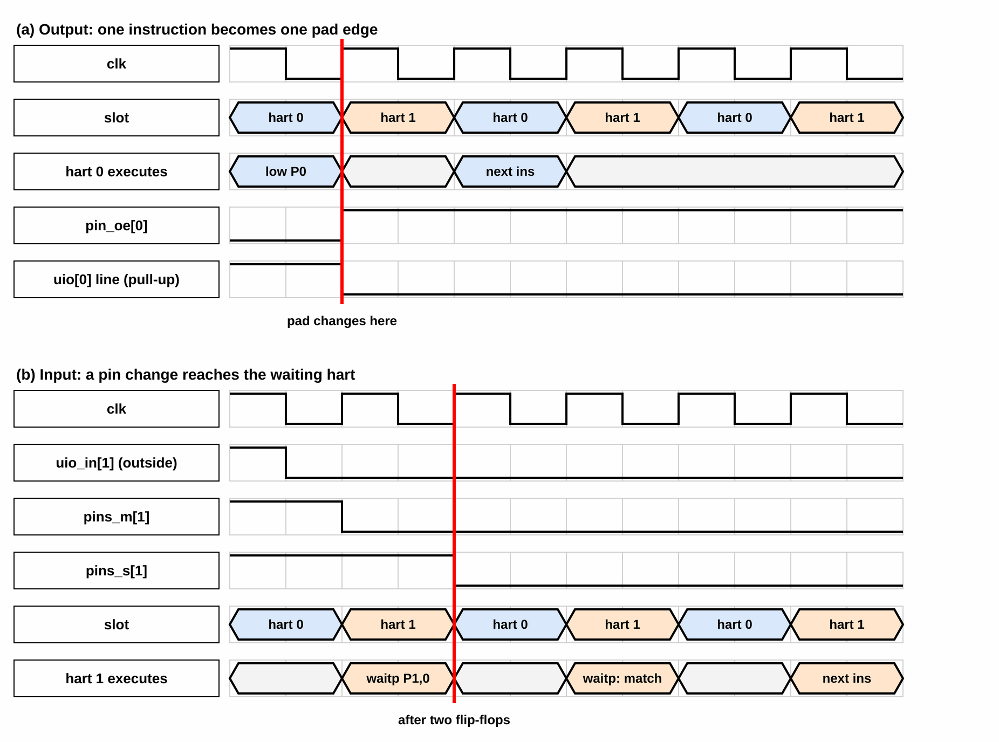
Output.
When a hart executes low P0, its output and enable registers and the pad registers pin_out and pin_oe are written at the end of that same clock.
The pads are driven straight from flip-flops, so an edge has no decode delay that depends on the instruction.
One exception keeps the pads free of glitches: a push-pull high on a released pin enables the pad one clock after it sets the output bit (docs/dual_role.md).
Input.
A pin passes two flip-flops (pins_m, pins_s) before any hart or block sees it.
A hart that waits with waitp looks at pins_s once per tick and goes on in the tick after the level matches.
5. The instruction set
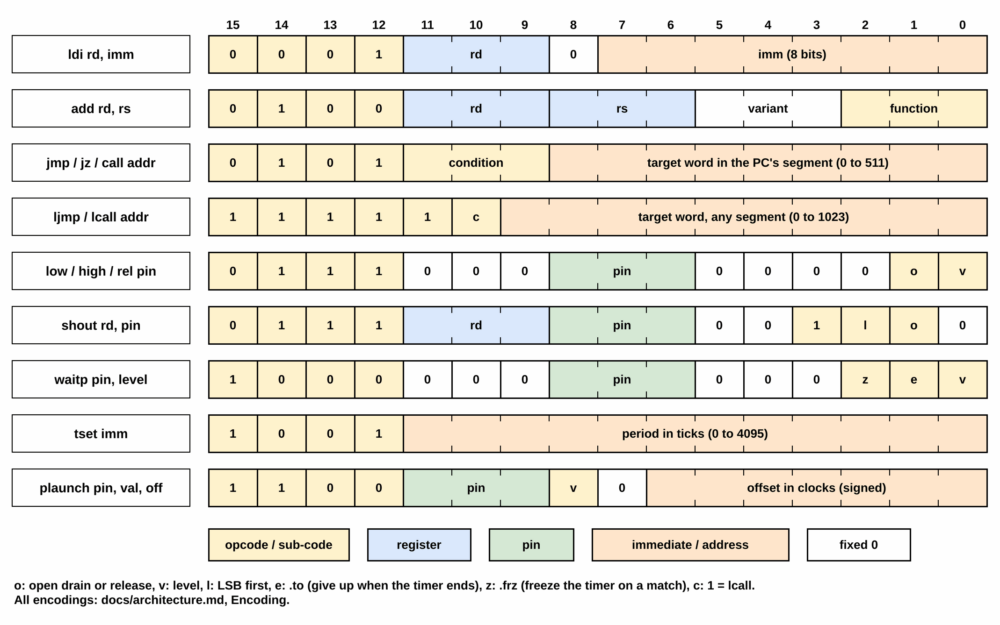
Every instruction is one 16-bit word with the opcode in bits 15 to 12; all encodings are in docs/architecture.md.
The groups:
| Group | Instructions | What they are for |
|---|---|---|
| Pin, one bit | low high rel pin |
Drive low, drive high, release (open drain high) |
| Pin, serial | shout[.lsb][.od] rd, pin · shin[.lsb] rd, pin |
Put the next bit of a register on a pin, or take a pin into a register, and rotate the register: one data bit per instruction |
| Pin, whole port | rdp wrp woe gpo gpi |
Read or write all eight pins, the enables, the general outputs and inputs |
| Wait for a level | waitp[.to][.frz] pin, level · waitp2 |
Stop until a pin (or one of two pins) has a level; .to gives up when the timer ends, .frz freezes the timer at the match so that firmware can measure a pulse |
| Time | tset ticks · tsetr · twait · tpre · tgeth tgetl |
A period timer per hart, see below |
| Host and peer bytes | rxb[.nb] txb[.nb] · rxp[.nb] txp[.nb] |
A byte from or to the host FIFO of the core, or the FIFOs between the two cores |
| Data | ldi mov add sub and or xor shl shr cmp test adc sbc cpc rlc rrc par · ld st · ldx stx |
Byte arithmetic with Z and C, parity, the 128-byte data memory, and the whole 1 KB of the shared SRAM |
| Control | jmp jz jnz jc jnc call ret djnz jtab halt nop · ljmp lcall |
Branches inside a segment of 512 words, one level of call, a loop counter, a jump table; ljmp and lcall reach any of the 1024 words |
| CRC | crc[.lsb] rd, n · crcset crcpoly crcgh crcgl |
Any CRC up to 16 bits, n bits per instruction, one unit per hart |
| Launcher | pelsel pin, edge · plaunch pin, val, off · plaunchr |
Change a pin at a predicted edge plus an offset |
| Delay lines | dlyw sel, rs · dlyr rd, sel · dlyr.cal rd |
Set and read the tap of a line; read how many taps one clock is |
| Capture, line units | capon capoff · erxon etx erxw erxl |
Start and stop the capture; send and receive frames or packets on the selected line unit (core 0) |
| Added last (docs/isa3.md, docs/tickgen.md) | low.h high.h rel.h shout.h wrp.h woe.h · twait.t · waitm waite evs evc · tfn tfk tfm twait.f |
A pin write that lands one clock later, so edges fall on every clock (20 ns); a toggle when the period ends; waits on a pin pattern or on event flags; the fractional tick generator. No protocol firmware uses them yet |
A program written for an earlier core runs unchanged: every firmware file of an earlier commit assembles to the same words with the current assembler (test/check_asm_compat.py, by default against the last commit before the instructions added last; --rev f08b33c for the 512-word core).
Why the timing is exact
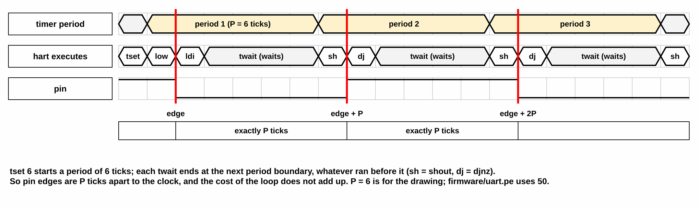
Three properties together make an edge land where the firmware says, to the clock:
- Every instruction that does not wait takes exactly one tick.
There is no cache, no interrupt and no pipeline stall.
(The one case where a hart loses a tick without asking, a steal of the shared SRAM port, sets a flag.) twaitwaits until the period ends, not for a number of ticks.
tset Pstarts a period of P ticks.
Eachtwaitreturns exactly P ticks after the previous one returned, however many instructions ran in between (as long as they fit in P).
The cost of the loop does not add up from bit to bit.- If the firmware is too slow, it says so.
Atwaitthat finds its period already over returns at once and sets a sticky late flag that the host reads in the status.
tools/petime.pyanswers the same question for a firmware file before it is loaded.
tpre n makes the timer unit 2^n ticks, so periods reach 335 ms (docs/architecture.md, Timing).
6. From source to waveform
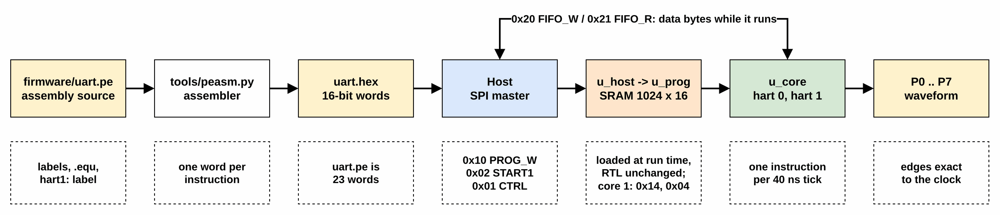
- Write the protocol as assembly,
firmware/<name>.pe.
A labelhart1:marks where the second hart starts. - Assemble it:
python3 tools/peasm.py firmware/uart.pe -o uart.hexprints23 words, hart1=12.
The assembler is one Python file with no dependency. - Load, start, exchange: the host steps of the next figure.
What the host does
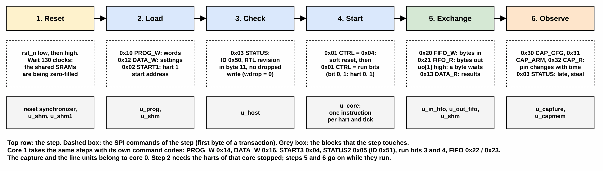
Every host action is one SPI transaction: a command byte, then its data bytes.
A transaction ends when CS_N has been high for four clocks in a row (80 ns at 50 MHz); a shorter high pulse is taken as a glitch and ignored.
| Step | Core 0 | Core 1 | What happens in the chip |
|---|---|---|---|
| Load the program | 0x10 PROG_W |
0x14 |
words go into u_prog or u_prog1 while that core is stopped |
| Settings for the firmware | 0x12 DATA_W |
0x16 |
bytes go into the data memory (a bit time, a mode, an address), so one image serves many configurations |
| Where the second hart starts | 0x02 START1 |
0x04 START3 |
the first hart of a core starts at word 0 |
| Check | 0x03 STATUS |
0x05 STATUS2 |
16 bytes: run and halted bits, PCs, FIFO counts, late, steal and dropped-write flags, capture state, an ID (0x50, 0x51) and the RTL revision (byte 11) |
| Soft reset, then run | 0x01 CTRL |
the same byte | value 0x04 clears PCs, flags, timers, pin registers and FIFOs of both cores; the memories keep their contents.Then bits 0 and 1 run harts 0 and 1, bits 3 and 4 harts 2 and 3 |
| Bytes in and out while it runs | 0x20 FIFO_W, 0x21 FIFO_R |
0x22, 0x23 |
the firmware takes them with rxb and gives them with txb |
| Results | 0x13 DATA_R |
0x17 |
the data memory, at any time |
| Watch the pins | 0x30 CAP_CFG, 0x31 CAP_ARM, 0x32 CAP_R |
which pins, the time unit, a trigger; then the recorded changes | |
| Test an SRAM macro | 0x48 MBIST, 0x49 MBIST_R |
March C- or March SS on one macro of either core, then the first failing address and bits | |
| Debug a hart | 0x50 DBG_W, 0x51 DBG_R |
breakpoints, single steps and injected instructions for any of the four harts |
Nothing in these steps depends on the protocol.
All host commands are listed in docs/architecture.md, Host SPI; a host library for the Tiny Tapeout demo board is in host/private repo file (docs/bringup.md).
Reset and power-up
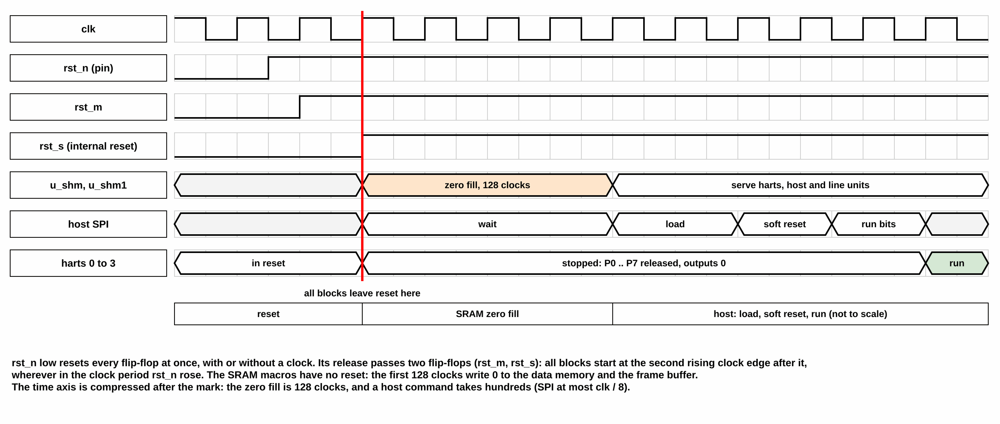
rst_nlow resets every flip-flop at once, with or without a clock.
All outputs are 0, no protocol pin is enabled, every delay line is bypassed.- The release is synchronized.
rst_npasses two flip-flops (rst_m,rst_s), and every block is reset byrst_s: all blocks leave reset at the second rising clock edge afterrst_nrises (docs/reset_clock.md). - Zero fill.
An SRAM macro has no reset.
In the first 128 clocks each shared SRAM writes 0 to its data memory and its frame buffer area; a host waits 130 clocks (2.6 us) afterrst_n.
The other bytes and the program memories start with unknown contents. - Nothing runs by itself.
The harts are stopped until the host sets their run bits.
The documented start is: load, soft reset, run.
Example: a UART transmitter in twelve words
This is hart 0 of firmware/uart.peprivate repo file with the address and the assembled word of each instruction (the comments are added here):
.equ BIT, 50 ; bit time in ticks: 50 x 40 ns = 2 us, 500 kbaud
.equ TX, 0 ; TX is pin P0
0 7001 high TX ; idle level
1 b000 tx: rxb r0 ; wait for a byte from the host
2 9032 tset BIT ; start the period timer
3 7000 low TX ; start bit
4 1208 ldi r1, 8 ; 8 data bits
5 0002 txbit: twait ; wait for the end of this bit period
6 700c shout.lsb r0, TX ; next data bit to the pin, LSB first
7 6205 djnz r1, txbit ; 8 times
8 0002 twait
9 7001 high TX ; stop bit
10 0002 twait
11 5001 jmp tx
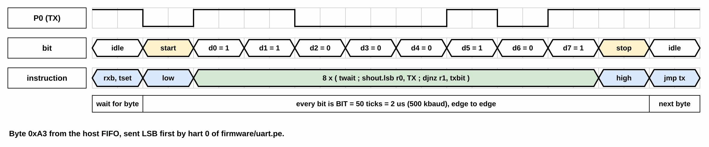
Each edge comes from one instruction, one tick after a twait returned, so the start bit and every data bit are exactly 50 ticks (100 clocks) wide.
The test test_uart_full_duplex in test/test.py measures every edge of this firmware against the clock, while hart 1 of the same file receives on P1 at the same time.
The general firmware versions read their settings (bit time, mode, parity, address) from the data memory (docs/uart.md, docs/spi.md, docs/i2c.md).
7. Harts working together
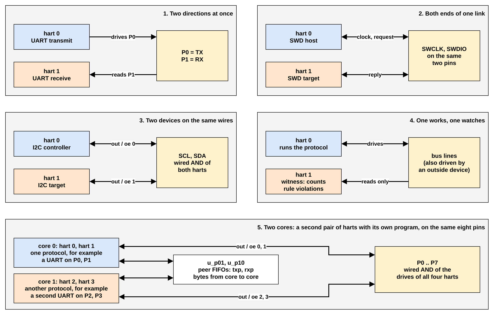
| Pattern | Example | Where |
|---|---|---|
| 1. Two directions at once |
UART: hart 0 transmits while hart 1 receives, full duplex down to 8 ticks a bit (3.125 Mbaud) | docs/uart.md |
| 2. Both ends of one link |
Hart 0 is an SWD debugger and hart 1 the SWD target it debugs, in one program of 428 words on the same two pins. Also JTAG adapter and TAP, PS/2 host and keyboard, Modbus master and slave |
docs/swd.md, docs/jtag_tap.md |
| 3. Two devices on the same wires |
An I2C controller and an I2C target on the same SCL and SDA, with clock stretching, or a fault injector that pulls a line low at a chosen bit | docs/dual_role.md |
| 4. One works, one watches |
A witness hart reads the lines and counts rule violations (a STOP inside a byte, a short clock phase, a framing error) | docs/witness.md |
| 5. Two cores |
The same UART firmware on both cores at once, on P0, P1 and on P2, P3, each with its own host FIFOs | test/test_core1.py |
Pattern 3 works because each hart has its own pin registers and a pin is the wired AND of all of them: the pin is low if any hart drives it low, high if one drives it high and none low, and an input if all release it.
This is how chips share an open-drain line, built into the pad logic.
Two cores and the peer FIFOs
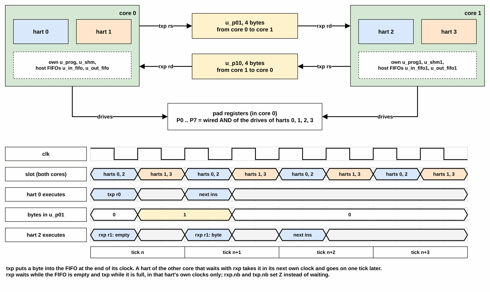
The two cores are the same module with separate programs, shared SRAMs and host FIFOs.
What connects them:
- Peer FIFOs.
txp rson one core puts a byte into a 4-byte FIFO thatrxp rdon the other core takes; there is one FIFO in each direction.
rxpwaits while its FIFO is empty andtxpwhile it is full, in that hart's own clocks.
A byte written bytxpis in the FIFO from the next clock. - The pins.
All four harts drive and read the same P0 to P7 through the wired AND. - Shared registers.
The general outputs, the launcher's reference pin and the delay line registers.
If both cores write one in the same clock, core 0's value is kept.
Between the cores there is no shared memory.
Four different protocols on the four harts at once have not been tested; what was shown is in docs/int5.md.
8. Measuring the other side
A device firmware usually reacts to the host's clock: wait for the edge, then change the data pin.
The edge needs two flip-flops to arrive and the hart one tick to act, so the reply comes some clocks after the edge, and nothing can be placed before it.
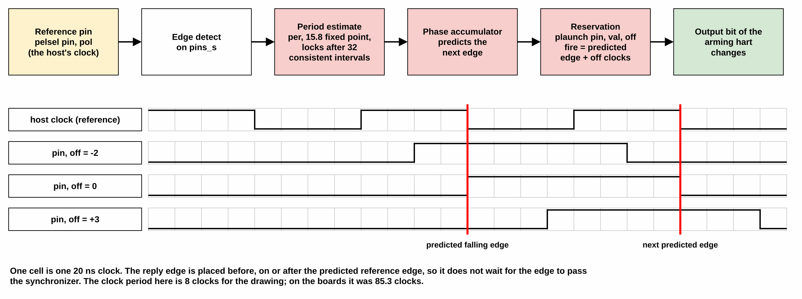
The predictive launcher u_pel removes that limit.
It measures the period of a clock on a pin (pelsel chooses the pin and the edge) and keeps an estimate with a fraction of 1/256 clock.
After 32 consistent intervals it predicts when the next edge will come.
plaunch pin, val, off then reserves one pin change at the predicted edge plus off clocks, where off may be negative.
The reply edge can sit before, on or after the host's edge, in steps of one clock (20 ns).
This lets a chip in a device's place find both ends of the host's sampling window: the offset is stepped until the host stops reading correctly, on the early side and on the late side.
Firmware that only reacts to the edge cannot reach the early side.

The figure is a measurement on FPGA boards, made with an older RTL (256-word program memory) and not yet repeated since.
The host was neither modified nor a model: Xilinx AXI Quad SPI under Linux, vendor IP in the second FPGA board.
A script on the bench PC chose the offset of each step, 4 clocks (80 ns) apart (fpga/board/skew_sweep.tcl), the firmware spi_device_pel.pe launched its MISO edge at that offset, and pass or fail was the data the host read.
The pass range matched the range that the simulation, committed before the run, had predicted (prediction and recordprivate repo file).
Since that run the estimator's arithmetic was widened: in the one-core RTL an interval 8 clocks short of the estimate could move the estimate the wrong way, and now a formal property shows that the update cannot wrap (docs/architecture.md).
The chip did not close that loop by itself on the board.
Stepping the offset and judging each step on the chip is shown in simulation only: margin_i2c.pe steps its own SDA edge as I2C controller and writes the target's window into the data memory as an eye and a shmoo (docs/margin.md).
Built on the same idea, also in simulation: can_dist.pe finds another CAN node's sample point (docs/can_dist.md), the inject_*.pe files put a chosen error at a chosen bit (docs/inject.md), and rule checkers are generated from one timing table per protocol (docs/spec_tables.md).
Finding a timing margin by a sweep is not new, and other entries to this competition do it too.
What is different here is the side (a device's place, against an unmodified vendor host), the launcher that can reply before the host's edge, and the prediction committed before the run.
Entry by entry: docs/novelty.md.
Finer than a clock: calibrated delay lines
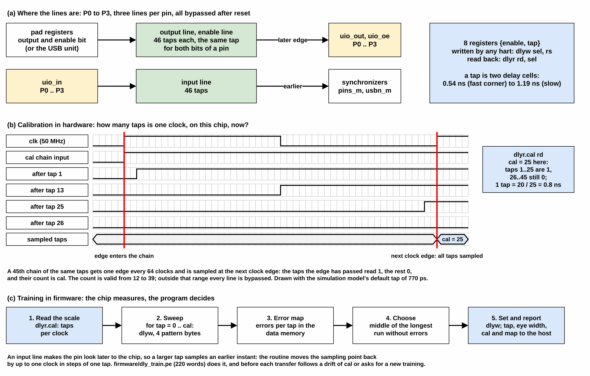
The launcher's step is one clock, 20 ns.
The delay lines u_dly add a step of about a nanosecond on four pins, as hardware and firmware together:
- Hardware delays.
P0 to P3 each have three chains of 46 taps: for the output bit, for the enable and for the input.
An output edge can leave up to 46 taps after the clock edge; an input line makes the pin look later, so the sampling instant moves earlier.
The output and enable lines of a pin always take the same tap, so the pad rule above holds behind them. - Hardware measures.
A tap is two delay cells, 0.54 ns in the fast corner and 1.19 ns in the slow one by the library, so a tap number alone says little.
A further chain of the same taps is sampled one clock after an edge entered it.
The count,cal, is how many taps one clock is on this chip at this moment (dlyr.cal).
Outside 12 to 45 the chip bypasses a line once its input has been still for three clocks; a line whose input keeps changing keeps its tap until it pauses (docs/dly.md).
The range was 12 to 39 on chains of 44 taps until the layout delays of run H4d gave 38 or 39 in the fast corner, at the edge of it (docs/dly.md). - Firmware decides.
A program turns taps into time withtap x 20 ns / cal, or trains: it sweeps the tap of a line over one clock, counts wrong bytes of a known pattern at each tap, and sets the middle of the longest run without errors.
firmware/dly_train.pe(220 words) does this, reports the eye to the host, and before each transfer moves the tap in proportion whencalhas drifted or asks for a new training. - Off by default.
After reset every line is bypassed.
A firmware that never usesdlywruns as before: in ten test modules the record of every pin at every clock is the same file with and without the block. - Finer USB edges.
The full-speed transmitter is on a 10 ns grid, so its transitions are 0, 3.33 or 6.67 ns late.
With bit 6 of delay line register 0 set, the lines of D+ and D- take a tap for every transition (none,cal / 6orcal / 3, written by the firmware) and all transitions land on one grid: 0.52 ns of error instead of 6.67 ns over a whole enumeration, in RTL simulation with the delay model, and 0.36 to 1.13 ns over the three corners with the post-route delays of run H5 in gate-level simulation, inside the source jitter limits of the specification at the chip core's pins (docs/usb_fs.md).
The Tiny Tapeout multiplexer, the pads and a real host are not in that result.
Behind it: the tests of test_dly (11 in RTL simulation, 2 only at gate level with SDF), 27 planted bugs that those tests and the lockstep catch, 4 tests of test_dly_train with 13 planted bugs, and claims in the power-on proof.
Not behind it: the simulation is a delay model (770 ps per tap unless a test sets another).
One layout has the block, with the 44 taps per line the RTL then had, and meets timing with every delay cell in place (run H4d, section 11).
Simulated with that layout's delays in three corners, dlyr.cal reads 38 or 39 (fast), 25 or 26 (typical) and 16 (slow), a tap is 0.50, 0.73 and 1.16 ns for a rising edge, and every tap is later than the one before; the netlist is proved equivalent to its RTL, also with the delay cells cut out so that the lines can switch on in the proof.
Run H5 is a layout of the 46-tap RTL with the fine USB edges; its netlist is proved equivalent to its RTL with and without the delay cells, and its SDF gave the USB result above.
Not shown: a layout of the RTL in src/ (which adds the four blocks of section 2), local mismatch between chains, anything on silicon.
Details and limits: docs/dly.md.
9. Protocols
152 firmware files in firmware/private repo file, with one page per protocol or family in docs/private repo file (96 pages) that gives pins, host commands, timing, limits, tests and the planted bugs the tests must catch.
Every firmware is checked in simulation; none has run on a board with the two-core RTL.
The protocols the brief names (UART, SPI, I2C, USB, 10 Mbit Ethernet, JTAG, SWD, PS/2, CAN), each with what the chip does, its tests, what ran on a board and its limits, are in one table: docs/brief.md.
In short: all nine are firmware or a line unit with tests in the full regression; UART, SPI, I2C and SWD also ran on FPGA boards with an earlier RTL; on the FPGA board with the RTL of F5t-d66 (bit ad022a41, 2026-11-18 and 19) USB (a PC's USB host enumerated the device), 10BASE-T transmit (a PC network card), CAN (the KD240's CAN controller) and SWD (an ST-Link probe read the chip's target, the chip's host read an STM32G474) met real devices (section 12, Real external devices); Ethernet receive, JTAG and PS/2 have not been on a board.
Flexibility: what the history shows
The claim "a new protocol needs no new hardware" can be checked in the git history:
| Span of commits | Firmware files | Change in src/*.v |
|---|---|---|
a2aad45 to e9ca488 |
13 to 31 (WS2812B, 1-Wire, the bridge and others) | none: git diff a2aad45 e9ca488 -- 'src/*.v' is empty |
f08b33c to f34eee1 |
31 to 141: 110 added | none: git diff f08b33c f34eee1 -- 'src/*.v' is empty |
after f34eee1 |
141 to 152 | the RTL changed (per-hart pin registers, more instructions, deep capture, line units, SRAM data memory, the second core, delay lines); every older firmware still assembles to the same words |
The honest limit of this evidence: the author chose those 110 protocols, after the RTL existed, and nothing was sealed in advance.
A procedure that removes that choice is written and tooled in docs/flexibility.md: freeze the RTL under a tag, draw protocols from a public randomness beacon, implement them with firmware only, record time and failures.
It has not been run yet.
Protocols faster than a few ticks per bit do not fit in firmware; four of them got hardware line units.
10. Verification
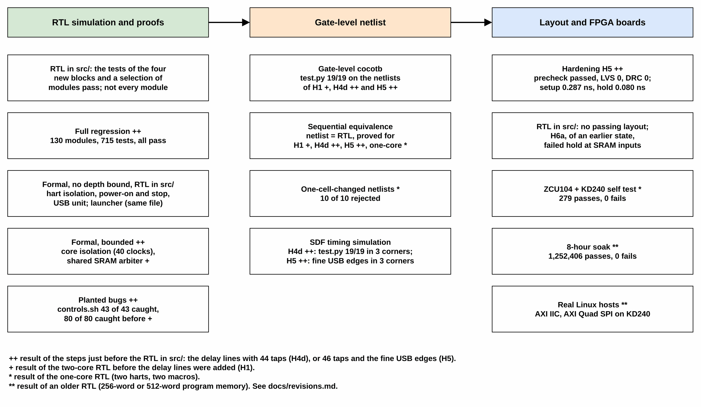
The design grew in steps, and not every check was repeated after every step.
The "RTL" column says which step a result belongs to (docs/revisions.md): src/ (the RTL in src/, with the four blocks added last), 46 taps (the step before it), delay lines (44 taps), pre-delay (the two-core RTL before the delay lines), one-core, older.
docs/verification.md states each claim with the strength of its evidence and what it leaves out.
| Step | Result | RTL | Details |
|---|---|---|---|
| cocotb simulation of the four blocks added last | their own modules (test_mbist, test_mbist_chip, test_dbg, test_isa3, test_tickgen, test_tickgen_chip, test_int6_cross) and a selection of the other modules after each merge and after the fixes; not every module |
src/ |
docs/revisions.md |
| cocotb simulation, full regression of F5t-d66, the RTL before the area reduction | 141 runs (140 modules; test_mbist runs twice, once per SRAM model), 804 tests, 789 pass, none fail, 15 skipped (5 need a netlist with SDF; 10 are the halves of the two test_mbist model runs, each test running in one of them), on the tree of 4c72459, 2026-11-18; src/ stayed at 3bd13cb7 (F5t-d66) throughout; each job copied the test tree when it started, and three jobs took commits made during the run (test_reset_release took 3b61133, test_host_bringup and test_host_partial took ff405ac: a test fix and a host library fix) |
F5t-d66 | evidence |
cocotb simulation, full regression of the src/ of this tree (declaration fix) |
143 runs (142 modules; test_mbist runs twice, once per SRAM model), 815 tests, 799 pass, none fail, 16 skipped (6 need a netlist with SDF; 10 are the halves of the two test_mbist model runs), on one copy of the tree of 3c7a8cf, 2026-11-19 (src/ c74b3267; no test, firmware or host file changed after it) |
src/ |
evidence |
| cocotb simulation, full regression of the area-reduced RTL | 141 runs (140 modules; test_mbist runs twice, once per SRAM model), 804 tests, 789 pass, none fail, 15 skipped, on the tree of 1ace5f4, 2026-11-18 (src/ e400b30e of a4861cf, the Verilog of 2ad37f2; no commit during the run); then the eight modules whose files changed after 1ace5f4, on the tree of ab7b7a0 (2026-11-19): 43 tests, 41 pass, none fail, 2 skipped, CAN controls 19 of 19 |
area-reduced RTL | evidence, evidence |
| cocotb simulation, full regression | 130 modules, 715 tests, all pass, none skipped, on commit 80f6218.See the note below the table |
delay lines | evidence |
| cocotb simulation, later run of the whole tree | 131 modules, 721 tests on commit 2f8eae4: 718 pass, 2 skipped (they need a netlist with SDF), 1 fails: test_can_gen_rates, late on purpose, failed by the late flag check at the end of the test.Marked in bea5db6; its module then passes 8 of 8 alone, and the whole tree was not run again |
delay lines | evidence |
| cocotb simulation, full regression before the delay lines | 129 modules, 707 tests: 704 pass, 3 fail | pre-delay | evidence |
| Planted bugs: every test and proof must reject a broken copy | test/controls.sh 43 of 43 caught on the delay-line RTL (the 27 of the delay lines among them), and 13 of 13 in the training firmware; the whole list, 80 of 80 caught, before the delay lines.The four blocks added last brought their own. Four entries of test/controls.sh and one of the power-on proof that the fixes of 14e8b4b had left pointing at old source were re-targeted in dba923b and caught; tools/ctl_apply.sh finds no planted bug of any list that leaves its file unchanged on src/.On src/ the 57 entries of the blocks of branch int6 and of the review fixes were run and all caught (evidence/controls_int6_5861f2d); a run of the whole list on src/ is not committed |
delay lines, pre-delay, src/ |
section 2 |
| Formal, no depth bound: hart isolation in a core; power-on and stopped-hart safety of the chip | proved (k-induction and PDR), with 13 of 13 and 36 of 36 planted bugs caught (formal/logs/iso_20261120_044547, formal/logs/por_20261120_051925) |
src/ |
section 3, formal/README.mdprivate repo file |
| Formal, no depth bound: the shift unit; the launcher | proved, with 9 of 9 and 8 of 8 planted bugs caught (formal/logs/su_20261120_011713, formal/logs/pel_20261120_013225) |
src/ |
section 3, formal/private repo file |
| Formal, the blocks added last on their own | SRAM self test: k-induction and BMC pass, 18 of 18 planted bugs caught, and 8 of 8 in the column check; tick generator: proved, 11 of 11 (docs/mbist.md, docs/tickgen.md) | src/ |
formal/logsprivate repo file |
| Formal, bounded: core isolation; the shared SRAM's port arbiter | bounded checks only, not proofs: core isolation is checked for 43 clocks from reset (the reachability control first sees core 1 differ at clock 38), 6 of 6 planted bugs caught; the arbiter for 17 clocks with the short fill and 134 with the full fill, 9 of 10 planted bugs caught, one undecided. No unbounded proof of either |
src/ |
formal/logs/coreiso_20261120_082354private repo file, formal/logs/shm_20261120_021055private repo file |
| Formal, USB line unit | proved without a depth bound (k-induction) with the rules of the fine edges; loopback bounded to 135 and 220 clocks; 13 of 13 planted bugs caught (formal/logs/usb_fs_20261120_015658) |
src/ |
docs/usb_fs.md |
| Formal, Ethernet receiver, RMII and SpaceWire line units, capture | proved without a depth bound, with 6, 5, 4 and 19 planted bugs caught (formal/logs/eth_rx_20261120_013156, rmii_20261120_013159, spw_20261120_013216, capture_20261120_020336) |
src/ |
section 3 |
Reference model in lockstep (tools/peiss), one core and both cores |
3/3 and 1/1 | delay lines | docs/iss.md |
Third-party device models (cocotbext-uart, -spi, -i2c) |
14/14: 7 sessions pass, and each of 7 planted faults is seen by the model | pre-delay | docs/thirdparty.md |
Static deadline check (tools/petime.py) |
the 144 firmware files of int5b: 39 PASS, 34 without a deadline, 3 VIOLATION, 68 UNDECIDED (which is not a pass); dly_train.pe, added since, is PASS |
firmware | docs/petime.md |
| Gate-level simulation | test/test.py 19/19 on the netlists of runs H1, H4d and H5.On the one-core netlist: 19/19 and 11 more modules |
pre-delay, delay lines, 46 taps, one-core | section 6 |
| Netlist equivalence, SRAM macros cut out | Run H1: proved in 246 s; of 15 netlists with one cell changed, 14 are rejected with a trace and one is left undecided (a write enable of u_shm, which a gate-level simulation tells apart).One-core: proved in 289 s; 10 of 10 netlists with one cell changed rejected |
pre-delay, one-core | section 5 |
| SDF simulation of the H1 netlist, three corners | test/test.py 19/19 in each corner; test_sdf, and tests of six more modules in the slow corner, three of them also in the fast corner |
pre-delay | section 6 |
| Netlist equivalence of run H4d, SRAM macros cut out | proved in 315 s with every line bypassed, and in 335 s with the 1,144 delay cells cut out as well, so that the lines switch on; a netlist with two taps of one line swapped passes the first and is rejected by the second. The same two proofs and the same control on the netlist of run H5 |
delay lines, 46 taps | section 5, formal/logs/equiv_gl_20261114private repo file |
| SDF simulation of the H4d netlist, three corners | test/test.py 19/19 in each corner; test_sdf 5/5 (in the fast corner one test failed on an assertion of the test itself and passed alone without it); the two delay line tests 2/2 in each corner |
delay lines | section 6, evidence |
| SDF simulation of the H5 netlist, three corners | the fine USB edge test: worst consecutive edge error 0.358, 0.461 and 1.127 ns (fast, typ, slow), inside TDJ1 and TDJ2; with the fine edges off 6.70 to 6.75 ns | 46 taps | docs/usb_fs.md |
Mutation testing of c74b3267 (src/ without the shift unit) |
1,126 mutants weighted to the lines the area reduction changed: 877 killed, adjusted 78.8 %, raw 78.0 %, both lower bounds (150 survivors not run against all their cases; 41 passing cases missing from the case list); lowest pe_shm 39.9 % (31 mutants of its write queue reached by none of the 748 cases run); pe_su.v not in its sample (next row) |
c74b3267 |
docs/mutation.md |
Mutation testing of the shift unit (src/ 333edc3a) |
every candidate of pe_su.v and of the lines it changed in three other files, 1,575 mutants: 1,430 killed, 45 equivalent (all proven formally), adjusted 93.9 %, raw 91.2 %, both lower bounds (88 survivors run only against their infected cases of 10 s or less); pe_su adjusted 93.9 % |
333edc3a |
docs/mutation.md |
| Mutation testing, SDF simulation, vendor IP as the host | 738 mutants on int2 (98.0 % and 98.9 %); 21/21 per corner; unmodified Xilinx AXI IIC and AXI Quad SPI drove the chip |
older | docs/mutation.md, section 6, section 8 |
| FPGA boards (ZCU104 at 50 MHz, KD240 as peer and host) | one-core RTL: self test sections 1 to 16, 279 passes, 0 fails. Older RTL: 8 hours, 1,252,406 passes, 0 fails. Two-core RTL: the area-reduced RTL without the shift unit (bit cc9fbbae) against a PC's USB host, a CAN controller, a PC network card and an STM32G474 (SWD); the RTL of src/ in the SPI roles only: the shift unit as SPI master at 12.5 MHz, mode 3, against an STM32G474 (bit f6e7c3de), also for 24 hours (MISO 1,589,690 of 1,589,702 transfers right, 12 wrong within 190 s, cause not found) and with the chip's CS as the G474's hardware NSS (20 of 20 with CS, ff 10 of 10 without), and as SPI device at 9 MHz (260 of 260 both ways, bit 0eeefc8d; 18 MHz does not work) |
one-core, older, area-reduced, src/ (shift unit in the SPI roles only) |
section 9 |
| Static timing and physical checks | section 11 below | pre-delay, delay lines, 46 taps, src/ |
The last full regression in which every test passes is that of F5t-d66, the RTL before the area reduction, the tree of 4c72459 (141 runs, 804 tests, none failed; row above).
Before it, the last full regression in which every test passes is that of 80f6218 (130 modules, 715 tests, on the RTL with the delay lines); the later run of the whole tree on 2f8eae4 has one failure on the late flag check, explained and fixed in the test.
Neither is a run of a later step.
The whole account is in docs/revisions.md.
Four points about method:
- A check that cannot fail shows nothing.
Tests and proofs come with broken variants (a wired AND made "high wins", anadcwithout carry, a tap mapping off by one) that must fail. - Who judges the pins.
A reading of every test module graded 122 modules; those added since are not graded.
In 103 of the 116 modules of the first reading the pins are judged by a model that does not share the firmware's reading of the bus, in 13 by a model of the same author.
By the stricter rule of docs/evidence_grades.md no module has a third party judging most of its tests; the third-party judging on the two-core RTL is the 14 tests of the table and a CAN board check against a real CAN controller (docs/can.md). - Where a passing test proves less than its name.
The same reading listed 431 such places (docs/test_gaps.md).
None is a known fault of the design.
One was fixed at once and 62 more were worked on since: 35 fixed, 13 partly fixed, and 14 that only lacked a planted bug got one, with 76 planted bugs intest/controls_gaps.sh.
The rest of the list is the work that remains on the tests. - Evidence with hashes.
evidence/holds the logs of the runs this page cites, with a receipt each and the SHA-256 of every file (tools/evidence_check.pyrecounts them).
tools/ledger_check.pycompares the numbers of this page and ofdocs/with docs/ledger.yamlprivate repo file, which names the raw file behind each number or marks it as kept outside the repository (run H1, the H4 runs before H4d and the earlier partial runs with the delay lines are).
The steps of the RTL, what was run on each and every hardening run: docs/revisions.md; the older steps: docs/verification.md, Revisions and docs/int5.md.
11. Physical implementation
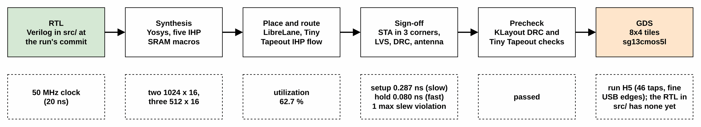
The design is hardened with the Tiny Tapeout IHP flow (LibreLane), run locally in the flow's container.
Three runs passed the precheck, each of an earlier step than the RTL in src/:
| Item | Run H1 (before the delay lines) | Run H4d (delay lines, 44 taps) | Run H5 (46 taps, fine USB edges) |
|---|---|---|---|
| Setup worst slack (slow corner) | 0.986 ns | 0.737 ns | 0.287 ns |
| Hold worst slack (fast corner) | 0.012 ns: met, with almost no margin | 0.066 ns | 0.080 ns |
| Max slew violations | 0 in all three corners | 6 (slow corner) | 1 (slow and typical: u_shm A_DIN[4], 0.793 ns against 0.595 ns) |
| Max capacitance violations | 1, in all three corners | 0 | 0 |
| Utilization (of it standard cells) | 58.5 % (45.0 %) | 62.2 % (50.0 %) | 62.7 % (50.7 %) |
| LVS, routing DRC, antenna | 0, 0, 0 | 0, 0, 0 | 0, 0, 0 |
| Precheck (KLayout DRC and the Tiny Tapeout checks) | passed | passed | passed |
| Gate-level simulation of the netlist | test/test.py 19/19 |
test/test.py 19/19 |
test/test.py 19/19 |
| Flow setup | that of src/config.json at the time |
a user SDC (src/pe_dly.sdc) and a setup margin of 3.5 ns in the repair steps |
as H4d, plus repair after global routing |
| Evidence | outside the repository | evidence/physical_h4d_2401643 |
evidence/physical_h5_14cdf53 |
Clock 20 ns (50 MHz) in three corners: fast 1.32 V -40 C, typical 1.20 V 25 C, slow 1.08 V 125 C.
The user SDC of H4d and H5 excepts the paths through the bypass multiplexers and the calibration chain of the delay lines; Tiny Tapeout has not accepted a user SDC for this design yet, and src/config.json in this tree is not the setup of either run.
The netlists of all three are proved equivalent to their RTL and were simulated with their layout delays (section 10).
The RTL in src/ has no passing layout.
Run H6a hardened an earlier state of it (the debug unit and the instruction additions, 0bf66c8) with the settings of H5 and ended with 17 hold violations, the worst -0.300 ns in the fast corner on inputs of the capture memory macro, whose clock pin had a slew of 0.64 ns.
The runs before and after it, and what each changed, are in docs/revisions.md.
tools/hard_gate.py reads a run's reports and fails it on the problems the flow lets through as warnings: a resolved setup that differs from the committed one, a netlist of another source tree, slew or capacitance violations on SRAM macro pins, fanout violations outside the clock tree leaves, a slow macro clock pin.
A second run of the RTL before the delay lines (H2) with a larger hold margin and a capacitance repair margin ended with setup and hold violations and was not kept.
A third (H3), with the capacitance repair margin alone, gave the slacks and the one capacitance violation of H1 again.
Magic DRC.
Magic's technology file for this process has no exceptions for the SRAM macros, so it flags their inner layout.
Sorted by position, all 426,567 items of run H1 lie inside the placement boxes of the five macros and none in the standard cell area; the two largest groups are a Metal2 minimum area rule (215,040) and "Can't overlap those layers" (203,455).
The items were not looked at one by one.
The 36 illegal overlaps are all between Metal4 and a macro's Metal4 obstruction, at the heights where the power stripes cross the macros.
src/config.json keeps the flow from stopping on either; the signoff DRC is the KLayout deck of the precheck, which passed.
Runs with the delay lines (H4 to H5).
The first attempts stopped in the design repair step with error RSZ-3006: the resizer could not insert a buffer in front of a pin marked don't-touch.
With the multiplexers and the first cell of each chain left to the resizer the flow ran through, but with the repair margins of H1 the slow corner ended at a setup slack of -0.351 ns on 10 endpoints, all on paths that start at u_eth.req and none through a delay line: the wire estimate before routing is 3.06 ns more optimistic on that path than the extracted wires.
Run H4d raises the setup margin of the two repair steps to 3.5 ns and closes it, and its netlist still has the 1,144 delay cells of the chains (572 dlyc0, 572 dlyc1) with no buffer between two taps.
Run H5 does the same for 46 taps (1,196 delay cells).
Left open in H5: one data input of the u_shm macro over the slew limit in the slow and typical corners.
Power and pins.
The static IR analysis of run H5 (typical corner, vectorless, the block's own grid without the Tiny Tapeout power switch) gives 13.9 mW and a worst drop of 1.28 mV; the outputs launched on the falling edge arrive within 0.140 ns of their pair partner (TD+/TD-, D+/D-) in the slow corner.
Both are explained, with their limits, in docs/verification.md, section 11 and docs/reset_clock.md.
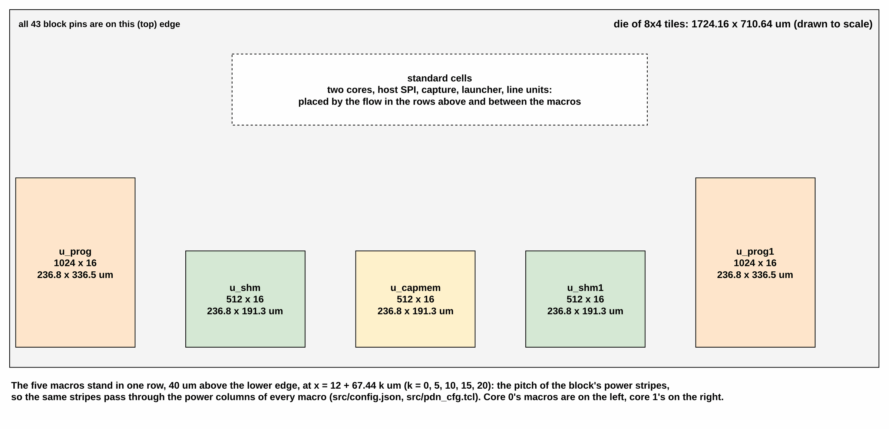
The five macros take 295,275 um2, about a quarter of the core area.
They stand in one row at a spacing that is a multiple of the pitch of the block's power stripes, so the same vertical stripes pass through the power columns of every macro (docs/architecture.md, Memory choice).
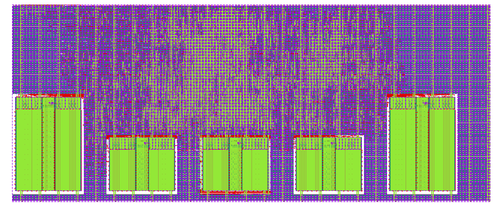
The metrics and logs of runs H4d and H5 are in evidence/physical_h4d_2401643 and evidence/physical_h5_14cdf53, the SDF runs of H4d in evidence/sdf_h4d_d5b3ea52; those of run H1 and of the H4 runs before H4d are not in evidence/.
For the one-core RTL they are in evidence/physical_422ec10 (setup 1.267 ns, hold 0.101 ns, no slew or capacitance violation, utilization 43.9 %); only the full path reports of that run are outside the repository.
12. Limits and known issues
| Item | State |
|---|---|
| Real external devices | Four protocols have met one on the FPGA board, on bit ad022a41 of F5t-d66's RTL (docs/brief.md).USB, CAN and 10BASE-T transmit on 2026-11-18: a PC's USB host found usb_dev.pe 10 of 10 times (8 configured with no error) and configured it 3 of 3 more times on 2026-11-19; the KD240's CAN controller through a transceiver, 250 kbit/s both ways with every frame exact; a PC network card, 50 of 50 10BASE-T frames byte-exact.The bit of the area-reduced RTL ( 1ea8457, bit cc9fbbae; its Verilog differs from src/ of this tree only by SRAM input buffers that are wires on the FPGA and the two declaration lines of a3aed55) met the same three: CAN 50 of 50 and 20 of 20 exact and 10BASE-T 50 of 50 byte-exact on 2026-11-18, the USB host 3 of 3 configured on 2026-11-19 (0 of 3 on 2026-11-18 while the PC's hub port was out of service, where the F5t-d66 bit failed too); bring-up 15 PASS, 0 FAIL, 1 SKIP and the SRAM self test 10 of 10 (evidence, evidence).SWD on 2026-11-19, both ways, on bit ad022a41: an ST-Link V2-1 with OpenOCD read its DPIDR 10 of 10 times at 480 kHz and 5 of 5 at 240 and at 100 kHz, and failed at 950 kHz, below the simulated limit of that firmware; and the chip as SWD host (swd_host.pe) read the DPIDR of an MCU, an STM32G474 on a NUCLEO-G474RE, 20 of 20 times, while with P0/P1 taken off the pins by the board's loop mode and with the SWDIO wire unplugged it read no reply 5 of 5 times each; on the area-reduced bit cc9fbbae, swd_host_gen.pe powered up the MCU's debug domain and read its CPUID (0x410FC241, Cortex-M4) and DBGMCU_IDCODE (0x20036469, STM32G47x) through the MEM-AP (docs/swd.md, evidence, evidence, evidence).Not yet: a PC sending to the chip's Ethernet receiver (its parts have not arrived), a JTAG adapter or target, a PS/2 device, an LED or a sensor. For the rest the other side was a simulation model, vendor IP in co-simulation, or the second FPGA board |
The RTL in src/ is new |
It adds four blocks to the step of run H5 and then the area reduction. The layout of the RTL just before the declaration fix of a3aed55 (2ad37f2, the same circuit; Layout row above) passes tools/hard_gate.py and the netlist checks (equivalence, SDF of three corners, XSim hold) locally and the official Tiny Tapeout flow (run 44310801964 on ci/area-2ad37f2: GDS, precheck 10 of 10, gate-level test 19 of 19); F5t-d66, the RTL before the area reduction, passes the official flow, its netlist is proved equivalent and run with the SDF of three corners, and every module passes on it (Layout row above); every module passes on the area-reduced RTL too (RTL simulation row above); still missing: a committed run of the whole planted bug list (section 10); its hart isolation, power-on and USB line unit proofs pass on it.Mutation testing ran on c74b3267, the two-core RTL before the shift unit (adjusted 78.8 %, a lower bound), and on 333edc3a for the shift unit and the lines it changed (adjusted 93.9 %, a lower bound).Not repeated on the two-core RTL: the vendor IP co-simulation and the earlier FPGA board runs (launcher sweep, Linux hosts, 8-hour runs); its own bitstream met real devices on the board on 2026-11-18 (Real external devices, below). At gate level only test/test.py ran (H1, H4d, H5 without delays; F5t-d66 with the SDF of each corner) and test_shm (H1) |
| Delay lines | Most tests use a delay model in RTL simulation (770 ps per tap by default). Two layouts (run H4d with 44 taps, run H5 with 46) meet timing with the lines bypassed and their own paths excepted (section 11); both need a user SDC. With the SDF of H4d in three corners the calibration count and every tap were measured (docs/dly.md); in the fast corner the count was at the upper limit, which is why a line now has 46 taps and the range ends at 45. With the SDF of H5 the fine USB edges were measured; the other delay line tests were not rerun on it. Nothing is on silicon. No test receives USB with an input line on, and the training firmware has only met the delay model |
| Proofs of the new blocks | Core isolation and the shared SRAM arbiter are checked to a bounded depth only (43 clocks from reset, the first difference of core 1 possible at clock 38; one planted bug of the arbiter undecided). Hart isolation inside a core is proved without a bound |
| Layout margins | No layout has comfortable margins. Run H5, the latest that passed, has a setup slack of 0.287 ns in the slow corner, a hold slack of 0.080 ns in the fast corner and one SRAM data input over its slew limit. Run H6a of the RTL with the four new blocks failed its hold checks at SRAM macro inputs behind a slow macro clock pin |
| Four harts together | Not shown: four different protocols at once. The capture and the line units serve core 0 only. A host read or a line unit can take the shared SRAM port from a hart for one tick (docs/host_read_steal.md) |
| Speed | One data bit costs a few instructions, so firmware protocols top out near 3 MHz. USB full speed, on its line unit, has edges on a 10 ns grid; only with the fine edges of the delay lines do they meet the source jitter limit, and that only at the chip core's pins in gate-level simulation of layout H5 (no multiplexer, pads, board or host) |
| SRAM macros on silicon | No evidence that the macros work on CMOS5L beyond the PDK providing them. The self test lets the host find a failing macro, and core 1 runs firmware from its own memories if one of core 0 fails, but nothing replaces a failing macro, and the self test has met only the PDK model and a fault model in simulation |
| Resolution and levels | 8 protocol pins, 20 ns clock grid (finer only through the delay lines), logic levels only: no voltage, threshold, slew or pull-up control |
| Flexibility evidence | The frozen-RTL and held-out procedure of docs/flexibility.md has not been run |
| Flow, coverage | The GitHub gds workflow has not been run on the two-core RTL; the GitHub test workflow runs test/test.py only; test_all (every module) has not been run on GitHub.Line and toggle coverage under Verilator only: line 74.6 %, toggle 63.1 % of src/ over the 142 runs with the chip's test/Makefile (verification.md); no FSM coverage |
| Static deadline check | tools/petime.py gives a guarantee only with PASS.That holds for 39 of the 144 firmware files of int5b (44 with all settings at 0) and for dly_train.pe; the late flag at run time stays the last word (docs/petime.md) |
| Clock duty | The 10BASE-T and USB full-speed transmitters use the falling clock edge and assume a clock high time of 45 to 55 %; the duty of the demo board's clock is not known (docs/reset_clock.md) |
| Reset | If the first synchronizer flip-flop takes a marginal release one clock late, the whole chip starts one clock later together, so a host should send a soft reset before the first start. Seen in RTL simulation and, on the H1 netlist, with the layout delays; run H1 meets recovery and removal of the internal reset in the three corners (docs/verification.md, section 6) |
| AI use | The author's own account of how AI tools were used is still to be written (docs/ai-use.md) |
The full list is in docs/verification.md, section 11.
Ten questions a reviewer may ask, weaknesses included: docs/faq.md.
13. Repository and how to run it
| Folder | Content |
|---|---|
src/private repo file |
RTL (Verilog; two files are port-only views of the SRAM macros) and the flow setup |
firmware/private repo file |
152 programs; firmware/gen/ holds the generated ones with their tables |
tools/private repo file |
peasm.py assembler, petime.py static deadline check, peiss reference model, pegen.py and specgen.py generators, mutation scripts; checks of the repository itself: ledger_check.py, evidence_check.py, doclinks.py, ci_shards.py, hard_gate.py |
host/private repo file |
pehost host library for the Tiny Tapeout demo board (MicroPython) and a 15-step bring-up script, checked in simulation, not yet run on a board |
test/private repo file, formal/private repo file, cosim/private repo file |
cocotb tests and planted-bug scripts; properties, proof scripts and logs; co-simulation with Xilinx AXI IIC and AXI Quad SPI |
fpga/private repo file, evidence/ |
FPGA builds, board scripts and predictions written before board runs; run logs with receipts and hashes |
spec/private repo file, heldout/private repo file, macro/private repo file |
Timing tables for the generated judges; candidates for the held-out draw; the SRAM macro views of the PDK |
docs/private repo file |
One page per protocol and the pages below |
python3 tools/peasm.py firmware/uart.pe -o $TMPDIR/uart.hex # prints: 23 words, hart1=12
sudo apt install iverilog # Icarus Verilog (the RTL runs used 11.0)
pip install -r test/requirements.txt # cocotb 2.0.1, test/README.md
(cd test && make -B) # test.py, 19 tests, about a minute
python3 tools/ci_shards.py runs test_i2c test_mbist # the make command of each module (two modules have a test bench of their own)
python3 tools/ci_shards.py run test_i2c test_mbist # run them; logs and results.xml in test/out/
python3 tools/ci_shards.py run --all # every module, one after another; the last full run in which all pass (130 modules) took 85,259 s of test time added up
- Proofs (Yosys, Z3, ABC): the
formal/run_formal_*.shscripts,run_equiv_fsm.sh, andrun_equiv_gl.sh <netlist>withPDK_ROOTset (formal/README.mdprivate repo file). - Evidence and numbers:
python3 tools/evidence_check.py check,python3 tools/ledger_check.py check. - GDS: the
gdsGitHub workflow, or locally with Tiny Tapeout'stt-support-toolsintt/:python tt/tt_tool.py --create-user-config --ihp, then--harden --ihp. - Use the chip: clock 50 MHz, host SPI mode 0 with SCK at or below 6.25 MHz, CS_N high for at least four clocks (80 ns) between transactions, pull-ups on P0 to P7 for open-drain protocols.
Wait 130 clocks after reset.
Write the program with0x10, set the hart 1 start with0x02, soft reset with0x01value0x04, then start with0x01value0x01(hart 0) or0x03(harts 0 and 1).
STATUS (0x03) returns the ID0x50as its sixth byte and the RTL revision as its twelfth (byte 11; values in docs/architecture.md). - Check a hardening run before citing it:
tools/macro_clk_slew.sh runs/wokwi(direct SRAM clock pin slew, needs docker), thenpython3 tools/hard_gate.py check runs/wokwi(nine items, listed in its help text);stamprecords the source tree a run was made from,verify-srcrefuses a netlist of another tree. - Figures of this page:
python3 docs/fig/src/gen_readme_figs.py && docs/fig/src/render.sh(draw.io sources indocs/fig/src/private repo file).
Documents
| Page | Content |
|---|---|
| docs/architecture.md | Reference: pins, timing, every instruction and its encoding, host SPI commands, memory map, shared SRAM, two cores, capture, launcher, line units |
| docs/submission.md, docs/revisions.md | One page for judges: claims, evidence, commands, what is not shown; which RTL each result belongs to, and the hardening runs |
| docs/int5.md, docs/dly.md | The steps from the one-core RTL to the two-core RTL with the results of each; the delay lines |
| docs/mbist.md, docs/debug.md, docs/tickgen.md, docs/isa3.md | The four blocks added last: SRAM self test, debug unit, fractional tick generator, instruction additions |
| docs/verification.md, docs/brief.md | Claims, evidence and what is not verified; the protocols the brief names, one by one |
| docs/novelty.md, docs/flexibility.md, docs/faq.md | What is new and prior art; adding protocols without an RTL change; ten questions a reviewer may ask |
| docs/evidence_grades.md, docs/test_gaps.md, docs/ledger.yamlprivate repo file | Who judges the pins in each test module; gaps found in the tests; the numbers with their raw evidence |
| docs/reset_clock.md, docs/ai-use.md, docs/info.md | Clock duty and reset release; use of AI tools; the Tiny Tapeout datasheet page |
| test/README.mdprivate repo file, formal/README.mdprivate repo file, evidence/README.md | How to run the tests and the proofs; what each evidence folder holds |
The other pages of docs/private repo file are one per protocol or tool and are linked where this page uses them.
Tiny Tapeout
Tiny Tapeout is an educational project that makes it easier and cheaper to get digital and analog designs manufactured on a real chip: https://tinytapeout.com.
See the FAQ and the guide to hardening locally.